縞
太平洋の海底に残る洋梨体の先行側と、月が形成された場所
北太平洋の海底を、長くまっすぐな縞が横切っている――メンドシノ、パイオニア、マレー、モロカイ、クラリオン、クリッパートンである。縞の長さは数千 km に及び、互いに平行である。縞は鉛直重力勾配（VGG）のマップで最も明瞭に見える。これらのマップは、重力の引力が短い距離のうちに急激に変化する場所を示し、そのため海底とその下にある幅の狭い構造を際立たせる。本シリーズでは、月は洋梨体の先端の上に築かれた。洋梨体は地球自身の物質でできており、その基部はキリティマティ付近の太平洋の上に立ち、月が切り離された後に地球の中へ回収された（Paper 3、LEF 機構：実際）。洋梨体は地球の自転に逆らって後ろへ傾いていた。その先端は西へ遅れ、その前面――自転の方向に面する側、すなわち先行側――は東を向き、その背面、すなわち後行側は西を向いていた。本論文は縞をこの洋梨体の先行側として読む。それは地球の自転に面した側であり、洋梨体が接続している間に引き伸ばされ、洋梨体が回収されるときに折り畳まれて縞となった。
幾何はこの読みと四つの点で合致する。赤道。縞は一つの赤道の平行線であり、洋梨体の基部はその赤道の上にある（そこから 1.6°）。「一つの赤道の平行線」とは、各縞が一つの大円から一定の距離を保つことを意味する。緯線が地球の赤道から一定の距離を保つのと同じであるが、ここではその赤道が傾いている。この種の線は、一つの軸のまわりの一つの回転運動が描くものであり、一つの赤道を共有する六本のこうした線は、それらがどのように作られたかに対する強い幾何学的拘束である。出ていく方向。縞は基部から東へ、アメリカの方向へ延びる。屈曲。基部の西には縞の二つの屈曲がある。一つは北にあって下へ曲がり、一つは南にあって上へ曲がる。二つの屈曲は互いに 3,360 km 離れている――これは月が載っていた 3,000 km の接触域の幅であり、その上にあった 3,650 km のドームの幅である。その中心は基部の西約 3,760 km、後行側にあり、後ろへ傾いた洋梨体がその先端を置くであろう場所にある。鏡像の刻印。先端の内側には、月の表側の刻印が鏡像として存在する。二つの面は互いに向かい合って立っていたので、封蝋に押しつけた印章のように、東と西は入れ替わり、北は北のままである。刻印は 1.37 倍に拡大されている。これは先端の上にあった本体の密度から今日の密度への月の収縮である。同じ質量がより小さな体積に詰め込まれると、その表面上のあらゆる距離が同じ比で短くなる。雨の海を北緯 13.2°、東経 179.0° に置くと、晴れの海はマーシャル列の上に、接触域の中心は雨の海の傍らに落ち、いずれも先端の刻印の内側にある。
縞は、それを横切る火山性の畝の下を途切れることなく通過する。したがって縞は側方と下方からの褶曲によって作られたのであり、上から切られたのではない。両側にある大きな畝の列――西のマーシャル–ギルバート–ツバル列と東のライン諸島――はこての畝として読まれる。これらの畝は洋梨体の先端そのものの内側、その剥がれた部分にある。それらは月の剥離の間、月が力で外へ引き出され、接触域が 6,000 km から 3,000 km へと狭まるときに、まだ軟らかかった接触域の物質から上へ引き出された――左官がこてを引き離すときに漆喰が残す畝のように――そして洋梨体が回収されるときに海底へと降りた。縞の系の赤道は今日の赤道に対して少なくとも 10° 傾いており、基部の近くでそれと交差する。分離の後に地球の自転軸が変化した可能性があり、本シリーズはこれを今後の研究に残す。
本草稿は、これまでに行われた観測、測定、および一つの研究（C.5）を集める。今後行われる研究は Part G に詳述する。縞の赤道の当てはめ、基部が赤道の上にあることについての偶然の検定、畝の下での縞の連続性、そしてこての畝と世界の他の場所で下から築かれた海嶺との比較である。
主張。北太平洋の縞は、月が築かれた洋梨体の先行側である。縞は洋梨体が立っている間に地球の自転の方向に引き伸ばされ、洋梨体が地球の中へ回収されるときに折り畳まれて縞となった。洋梨体の先端――月が形成された場所――は基部の西、後行側にある。先端はその輪郭を、縞の二つの屈曲に、表側の鏡像の刻印に、そして月の剥離の間、月が力で外へ引き出されるときに接触域で上へ引き出された二つの畝の列に残した。要するに、北太平洋の海底は洋梨体が立ち、回収された場所として読まれ、縞はその回帰の記録として読まれる。
数値。縞は縞の系の赤道の北 33.6°（メンドシノ）から 1.8°（クリッパートン）までに位置する。洋梨体の基部（キリティマティ、北緯 1.9°、西経 157.5°）は系の赤道から 1.6° にあり、その赤道は今日の赤道に対して少なくとも 10° 傾いている（最大で約 20°。本論文の位置は 11° の当てはめ、西経 159° で交差するものによる）。屈曲：北緯 23.8°、東経 164.9° と南緯 5.3°、東経 173.2°、互いの距離 3,360 km（3,040–3,700）。中心は北緯 9.3°、東経 169.3°、基部の西約 3,760 km。地球上の表側、鏡像として拡大率 1.37：雨の海は北緯 13.19°、東経 179.04°。晴れの海は北緯 11.5°、東経 166.3°。接触域の中心は北緯 8.2°、西経 179.3°。畝の列の間隔は 2,800–3,500 km。先端の領域を含む洋梨体自身の本体の長さは解放時に 8,890–9,000 km。月を先端とするとき、洋梨体は共回転線に達した（10,570–10,690 km）。縞の系は 9,360 km（C.4）。GEBCO 2026 グリッド上でのトレースは、太平洋の北、中央、南の系の縞が先端へ導かれることを示す。トレースした十本の経路はすべて先端の領域に達し、そのうち六本は最終接触域の中心から 1,500 km 以内を通る（166–1,274 km）。これに対し、三本の参照線ではそのような経路は一本もない（C.5）。総合的な読み。屈曲と畝の列はいずれも約三千 km の幅――月が載っていた接触域の幅――を測り、基部と先端の南縁は縞の赤道の上にある。
要求すること。（1）基部がキリティマティ付近の太平洋の上にあり、先端が西へ遅れる洋梨体（Paper 3）。（2）上からの切断なしに、引き伸ばされ、その後折り畳まれた先行側。（3）先端の上に載っていたとき、その表面が約 1.37 倍大きかった月（密度 1,300 対 3,344 kg m）。（4）月が剥離し、力で外へ引き出されるときにその物質がまだ軟らかく、そのため畝へと引き出された、先端の接触域。畝は洋梨体が回収されるときに先端の領域とともに太平洋の海底へ降りた。（5）下の層が更新される間に上に新しい層を積み重ねた海底。年代測定された表面は最後の層であり、縞はその下にあるより古い褶曲である（Part F）。
検証。モデルの要件と、それを検証するものは Paper 13（要件）にまとめられている。
マップ。鉛直重力勾配（VGG）と海底地形、Scripps / EarthByte、三次元の地球儀（Cesium）上で表示。すべての画像は著者によるものである。地形は海底の高さを示す。VGG は、上または下へ動くときに重力の引力がどれほど速く変化するかを示す。それはより高密度の物質とより軽い物質が短い距離のうちに出会う場所で強く、広く深い差を弱める。このため、幅の狭い褶曲、海嶺、または凹地は――表面にあっても、より若い物質の下に埋もれていても――その上で鋭い線として現れる（Part F）。地球儀の較正。位置は、地球儀の遠近を円盤の縁と既知の点（ハワイ、ハワイ–天皇海山列の屈曲、トンガ海溝の北端、明治海山。残差は 5 ピクセル未満）に合わせた後に地球儀の上で読み取られる。座標が既知の場所を表示の較正に用い、当てはめの後、それぞれは地球儀がそれを示す場所から 5 ピクセル以内に落ちる。縞の赤道。著者の点への当てはめでは、縞の系の赤道は今日の赤道に対して少なくとも 10°、最大で約 20° 傾いている（E.2）。本論文の位置は、この範囲の内側にある、今日の赤道と西経 159° で交差する 11° の当てはめによる。正確な値は Study 1 である。洋梨体（Paper 3）：キリティマティ付近にある幅 9,000–11,000 km の基部。太平洋の下部マントルにある大規模低速度領域（LLVP）の上にある。これは地球の核のすぐ上、マントルの最下部にある大陸規模の領域であり、地震波はそこを周囲のマントルよりもゆっくりと通過する。月との接触域：解放時に 3,000 km、それ以前は 6,000 km。ドーム：3,650 km。月：先端の上にあった本体の密度 1,300 kg m。解放時 2,600（半径 1,890 km）。今日 3,344（半径 1,737 km）。先端の上で本体は軽く、その揮発性物質からのガスで満ちていた。本体は接続したまま密度を増し、解放時には球形で、剛体の外殻をもっていた（Paper 2、§B.7）。地球上のすべての位置は今日の位置である。
序論：縞
この Part は本論文の主題――北太平洋の海底にあるまっすぐな線の系――と、本シリーズがそれに与える読みを示す。A.1 節はマップに見えるものを記述し、各縞がどこにあるかを測る。A.2 節は Paper 3 の洋梨体を想起し、縞がどのようにその先行側として読まれるかを述べる。この読みを支持する観測は Part B に示す。
A.1見えるもの
マップに見えるもの。北太平洋の海底を横切って、長くまっすぐな線が走っている。それらは重力勾配のマップで最もよく見え、そこでは鋭く幅の狭い筋として際立つ。縞の多くは二重または三重の構造で現れる――一本の縞が、互いに隣り合う二本または三本の近接した筋として現れるのである（図 A.1）。重力勾配マップを用いるのは、それが短い距離にわたる鋭い密度の対比に応答するからである。褶曲がより高密度の物質をより軽い物質の傍らに細い帯に沿って置く場所では、マップは線を描く。これはその帯が表面にあっても、より若い層の下に埋もれていても成り立つ。同じ海底の地形では縞はかすかである（Part F）。縞は北アメリカの海岸から西へ数千 km にわたって延びる――クリッパートンだけでも約 7,240 km、地球の半径より長い距離である――そしてほぼ平行である。六本すべてが、今日の赤道に対して少なくとも 10° 傾いた一つの赤道の平行線である（Part E）。
地球儀上の幾何学的解析。「一つの赤道の平行線」の意味は地球儀の上で最もよく見える。どの大円――球を二つの等しい半分に分ける円――も赤道の役を果たしうる。そこから北または南へ一定の距離を保つ円がその平行線であり、緯線が今日の赤道の平行線であるのと同様である。その赤道が今日の赤道に対して傾いていれば、その平行線は今日のマップを斜めに横切るが、互いに交わることは決してない。球の上の長い線の系がこのように振る舞う必要はない。それぞれ独立に引かれたまっすぐな線は一般に異なる大円の一部となり、任意の二つの大円は交わる。南北 30° 以上にわたって広がり、すべてが同じ赤道の平行線である六本の縞は、確かなことを語る。軸のまわりに回転する物体のあらゆる点はその軸の赤道の平行線に沿って動くので、この種の線は一つの軸のまわりの一つの運動が後に残す記録である。これが、本論文で縞の赤道を注意深く測る理由であり（Part E）、洋梨体の基部がその上にあることが重要である理由である（Part B）。
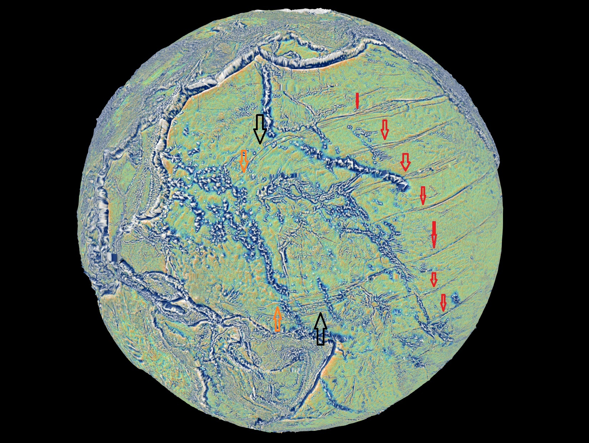
この図は全体像を一目で示す。赤い矢印はアメリカの方向へ延びる平行な縞を示す。黒い矢印は、基部の西で最も外側の縞がその平行線を離れて互いの方へ向かう二つの場所を示す。橙色の矢印は、その間隔が Part C における先端の幅を与える二つの点を示す。
表は各縞の位置を示す。中央の列は、縞の系の赤道から北への距離を度で与える。最後の列は、洋梨体の基部がある平行線から北への距離、すなわち中央の列から基部の 1.6° を引いたものを与える。
| 縞 | 系の赤道から | 基部からの距離 |
|---|---|---|
| メンドシノ | 北 33.6° | 北へ 32.0° |
| パイオニア | 北 30.1° | 28.5° |
| マレー | 北 25.9° | 24.3° |
| モロカイ | 北 20.4° | 18.8° |
| クラリオン | 北 10.5° | 8.9° |
| クリッパートン | 北 1.8° | 0.2° |
| 洋梨体の基部（キリティマティ） | 1.6° | — |
距離は各縞の上の基準点（メンドシノ岬、チャネル諸島、モロカイ、クラリオン島とクリッパートン島）から測定した。クリッパートンの西端での読み取りは 0.8° を与える。
表からの主な所見。表では二つのことが際立つ。縞は基部から北へ三十度を超えて広がり、そのうち最も南にあるクリッパートンは、基部からわずか一度の何分の一かの距離を通る。基部は系全体の赤道の上、これら六本の縞のうち最も南のものの傍らにある。さらに二本の縞がその南にあるので（B.4）、基部は系の縁ではなく、系の内側に位置する。感度と測定の精度。別の点――クリッパートンの西端――で測ると、読み取りは約一度変化する。この値は、現段階で単一の基準点での読み取りがもつ精度の限界についての目安を与える。完全な再当てはめは Study 1 である（Part G）。
A.2本シリーズの読み
この節が答える問いは、太平洋の海底にある線の系が月の起源とどのように結びついているかである。その結びつきは Paper 3 の洋梨体であり、ここで簡潔に想起する。
月の起源との結びつき。本シリーズでは、月は地球自身の物質から、地球が高速で自転している間に地球から立ち上がった洋梨体の先端の上に築かれた。洋梨体は月が切り離された後に地球の中へ回収された（Paper 3）。洋梨体の構造。洋梨体は若い地球の一つの隆起であった。その内部の圧力がそれを地球自身の物質の長い延長部へと引き伸ばした。それは地球の表面にある基部で広く、一つのなめらかな曲線を描いて先端へと細くなり、先端は月となる本体を担っていた。月と先端の接触域。月は広い接触域を介して先端の上に載っていた。接触域の幅は初め 6,000 km であり、解放時には 3,000 km に狭まった。月の上部のドームはその上約 3,650 km の高さまで立ち上がっていた。
重力と共回転半径。洋梨体は地球の一部であり、地球の他のどの部分とも同じく地球の重力によって保持されていた。洋梨体は放り出されなかった。その速度は放出の速度ではなく、洋梨体は共回転半径――当時の赤道上で地球の中心から約 16,400 km――の内側にあったからである。この距離は、地球とともに一日に一回転する物体がすでに自由軌道の速度で動いている境界を定める。切り離しと剥離。月の中心がこの距離に達したとき、月は分離し始めた。月はわずかな抵抗で剥がれ、その半分を少し超える部分が線を越えたとき、線の約 210 km 外側で、力で外へ引き出されて解放された。圧力の解放と洋梨体の回収。われわれは、月の切り離しが洋梨体の開口部を露出させ――栓が抜けたのである――その内部の圧力が解放されたと提案する。洋梨体を伸ばし続けるものが何も残らなくなると、洋梨体は数千万年から数億年にわたる分別の過程によって地球の中へ回収された。
基部の位置と深部の低速度領域。洋梨体の基部は、キリティマティ（クリスマス島、ライン諸島の一部）付近の太平洋の上、太平洋の下部マントルにある大規模低速度領域（LLVP）の上に立っていた（Paper 3、§E.4）。下部マントルの大規模低速度領域とは、マントルの最下部にある構造であり、地震波がそこを周囲のマントルよりもゆっくりと通過する。これはその物質が温度または組成において異なることを示す。大陸規模のこうした領域は二つ存在し、一つはアフリカの下、一つは太平洋の下にある。われわれは、太平洋の下の領域は、一部には、洋梨体が回収されたときに洋梨体の重い物質が落ち着いた場所であると提案する――ただし深部の領域の性質はなお未解決であるため、軽い留保を付す。太平洋の領域は、一部には、分別を終えていない核に関連する物質である可能性がある。
洋梨体の後方への傾き。洋梨体全体が後ろへ傾いていた。その先端と、その上の月は、地球の自転に遅れた。日常的な像は、回転するメリーゴーラウンドの上を外側へ歩いていく子どもである。中心から遠ざかるほど、メリーゴーラウンドについていくためにより速く動かなければならず、子どもは回転の方向に逆らって後ろへ押されるように感じる。洋梨体に沿って外へ運ばれた物質も同じように遅れ、そのため先端は基部の後ろに――地球は東へ自転するので、基部の西に――立つようになった。洋梨体の二つの側。こうして洋梨体には二つの側が生じた。その前面、すなわち自転の方向に面する側――東の先行側――は引き伸ばされた。その背面、すなわち自転から遠ざかる方を向く側――西の後行側――は、傾いた先端の下にあった。
吸収としわの形成。洋梨体が回収されたとき、それは地球に吸収された。その重い部分は洋梨体の基部の下のマントル最下部へ降り、吸収は海底にしわを残した――先行側には縞を、背面には西太平洋のしわの寄った弧を（B.8、E.3）。質量は地球を離れず、外側の高所から内側の深部へと移動した。先行側の壁の褶曲。この回帰において、洋梨体の先行側の壁は自転の方向に海底に沿って塗り広げられた。壁の遠い端が最も大きく遅れ、その中央はそれより少なく遅れたので、壁はそれ自体の上に折り返され、縞として横たえられた。本論文は北太平洋の縞をこの先行側の壁として読む。
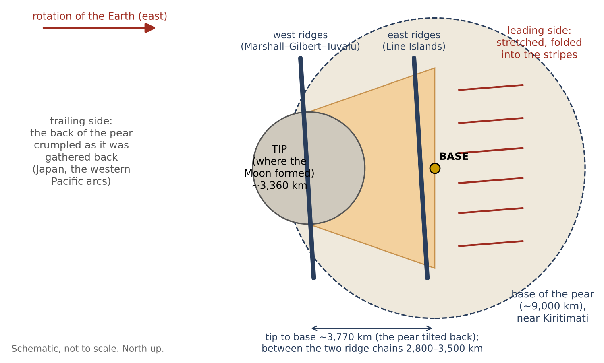
図 A.2 は、本論文の残りの部分が埋めていく地図を示す。中央に基部、その西に先端、その東に折り畳まれた先行側、そして先端の場所の両側に畝の列がある。
海底の鏡像の刻印。この読みが正しければ、海底は縞以上のものを保持しているはずである。先端が降りた場所では、海底は先端の輪郭を、接触域とおおよそ一致する幅で示すはずである。そしてその輪郭の内側に、先端の上に載っていた月の面――表側、今も地球に向いている側――の刻印を保持しているかもしれない。印章と封蝋。押し合わされた二つの面は互いの鏡像を残す。印章が封蝋に反転した刻印を残すのと同じである。地球から見ると、月の表側の東はその下の海底の西に落ち、北は北のままである。拡大率。月は当時、今日よりもはるかに密度が低かったので、刻印は今日の表側よりも 1.37 倍大きいはずである――これはそれ以来月の長さが縮んだ比である（Part C）。
本論文の構成。Part B は観測を示す。共有された赤道、その上の基部、東へ延びる縞、畝の下を通過する縞、基部の下の深部マントル、そしてしわの寄った後行側である。Part C は二つの屈曲から先端を突き止め、表側の鏡像の刻印を検証し、データの中で太平洋全体の縞を先端まで追跡する（C.5）。Part D は先端の内側にある畝の列を、月の剥離の間、月が力で外へ引き出されるときに先端の剥がれた部分で上へ引き出された畝として読む。Part E は今日の赤道に対する縞の赤道の傾きを測る。Part F は課題、とりわけ海洋底の若い年代を扱う。Part G は読みを検証する研究を詳述し、Part H はまとめる。
観測
Part A は本論文の読みを示した。北太平洋の長くまっすぐな縞は、月が築かれた洋梨体の先行側の壁であり、解放の後に洋梨体が地球の中へ回収されるときに海底の上に横たえられた。この Part は、マップに見えるものを観測ごとに見ていく。各節は同じ二つの段階をもつ。観測の下では、マップが示すものだけを、マップの用語で述べる――形態の記述である。モデルの下では、本シリーズの読みがなぜまさにそれを予期するのかを述べる――物理的な説明である。こうして読者は、その上に築かれる読みを判断する前に、各観測をそれ自体として判断することができる。
B.1 縞は一つの赤道の平行線である
観測。六本の縞は一つの赤道に平行であり、その北 33.6° から 1.8° までにある（A.1）。さらに二本がその南にある（B.4）。合わせてそれらは一つの赤道を取り巻く帯をなす。平易に言えば、ある特定の一つの大円がその赤道になるまで地球儀を傾けると、各縞は傾けた地球儀の上で一定の緯度に沿うことになる。通常の地図の平行線が一定の緯度に沿うのと同じである。六本の縞はこの赤道からそれぞれ異なる距離にあるが、どれも他の縞と交わらず、合わせてその両側に帯をなす。
モデル。これは洋梨体の先行側が引き伸ばされた方向である。縞は海底に対する洋梨体の前面の運動に平行であり、縞の系の赤道は縞を引き伸ばした回転の赤道――当時の地球の赤道――である（Part E）。理由は単純である。回転する物体のあらゆる点はその赤道の平行線に沿って動く。地球の上に立ち、その自転によって運ばれる壁はこれらの平行線に沿って引かれ、それが横たえられたとき、それが残した痕跡としわもまたこれらに沿って延びる。すべてが一つの赤道を共有する線の系は、単一の軸のまわりの回転が後に残すものである。互いに関係のない局所的な原因によって作られた線には、一つの赤道を共有する理由は何もなかった。
B.2 洋梨体の基部は縞の系の赤道の上にある
観測。Paper 3 における洋梨体の基部であるキリティマティは、縞の赤道の上、そこから 1.6° の距離にあり、クリッパートン（1.8°）に近接している。データの出典の独立性。基部の位置は Paper 3 において、縞が考慮されるより前に、その下の深部マントルから定められた。縞の赤道は縞だけに当てはめられた。したがって両者の一致は所見であり、選択ではない。無作為に選んだ点が系の赤道にこれほど近く落ちる頻度はどれほどかという問いは、Study 2 の主題である（Part G）。
モデル。洋梨体は当時の赤道から立ち上がった。その基部は引き伸ばしが集中した場所であり、縞の系はその周りに配置されている。自転する惑星から立ち上がり、自転によって外へ引き出される本体は、自転による外向きの引きが最も大きい場所――すなわち赤道――で最も容易に立ち上がる。縞が当時の赤道を記録しているなら（B.1）、洋梨体の基部はまさにその線の上にあるはずである――そして実際にその上にある。
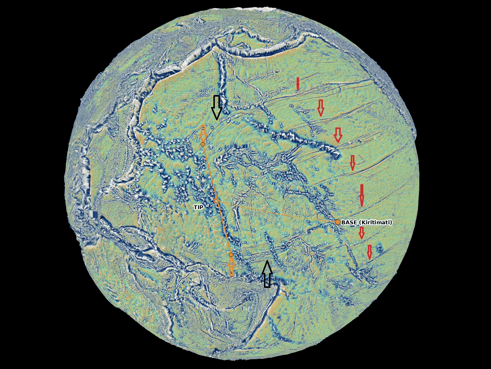
B.3縞は基部から東へ延びる
観測。縞は基部の領域から東へアメリカまで延びる。基部の西では縞は屈曲し、収束する（B.6）。片側性。縞は明確に片側的である。縞は基部の近くから始まり、その西側にはまっすぐな平行線として続かない。
モデル。東の方向は地球の自転の方向、すなわち先行側である。地球は西から東へ自転するので、洋梨体のうち東を向いた側は自転の方向へ前へ押し出された壁であり、西を向いた側はその背面であった。
後行側。西の後行側は異なる仕方で横たえられた――洋梨体の背面にある西太平洋と日本の弧の方へである（B.8）。自転の方向に引き伸ばされた壁は、その縞を基部の東側にだけ残し、西側には別の種類の痕跡を生み出すと予期される。基部の西にある構造の特徴づけは Study 3 の主題である（Part G）。
B.4基部の両側の縞
観測。メンドシノからクリッパートンまでの縞は洋梨体の基部の北にある。さらに二本の縞がその南、系の赤道から南へ約 6° と約 14° の距離にある。これらの南の縞はなお完全な同定を待っており、おそらくガラパゴスおよびマルケサスの名で知られる縞である。名称はここではマップ上の場所の目印としてのみ用いる。
モデル。前面は基部の両側で引き伸ばされた。基部は系の縁ではなく、系の内側に位置する。壁の前面の寸法。洋梨体の前面は幅の広い壁であり、その基部の幅は 9,000–11,000 km であった。そしてこの壁の幅全体が自転の方向を向いていた。したがって縞は基部の北にも南にも予期され、基部は一方の端ではなくその間にある。北の縞はよりよく見え、よりよく測定されている。二本の南の縞の完全な追跡は Study 1 の一部である。
B.5縞は畝の下を通過する
観測。火山性の畝が縞を横切る場所――北緯 36°、西経 178° 付近、北緯 6°、西経 159° 付近のライン諸島、南緯 2°、西経 175° のフェニックス諸島付近、そして南緯 13°、西経 152° 付近――では、縞は畝の下を続き、畝は切断されていない（図 B.2）。系の異なる部分にある四つの別々の交差において、縞は火山性の畝に出会い、その下に消え、その反対側に再び現れる。その上の畝は無傷のままである。
モデル。縞は側方と下方からの褶曲によって作られたのであり、上からの削り込みによって作られたのではない。上から切られた溝は、それが出会う畝をも断ち切ったであろう（図 B.3）。テーブルクロスの類推。両者の違いは容易に想像できる。本が置かれたテーブルクロスを横切ってナイフを走らせてみよう。ナイフはまず本に出会い、それを切るか、本がナイフを止めるかである――クロスの上の線は本のある場所で途切れる。今度はクロスを両端から押して、しわが寄って折り目ができるようにしてみよう。折り目は布そのものの中、本の下に生じ、本はその上に無傷のまま運ばれる。海底の上を引きずられた何かによって上から切られた縞は、その途中にあるすべての畝を切るか、その手前で終わらなければならなかった。海底そのものが側方と下方から褶曲して作られた縞は、畝の下を通過し、それを無傷のまま残す。四つの交差は第二の可能性を示している。
時間の順序と短縮の検定。観測それ自体は順序を決めない。褶曲がその下で形成されたとき、畝はすでに引き伸ばされた面の上に立っていた可能性がある。検定は、縞がその下を通過する場所で畝自体が短縮しているかどうかである（Part G）。立っている畝の下で形成された折り目は、畝が立っていた地面を圧縮したはずであり、畝はそれを示さなければならない。しわの寄ったテーブルクロスの上の本が、より狭い布の帯の上に載ることになるのと同じである。これは Study 6 の主題であり、問いは F.2 にもまとめられている。
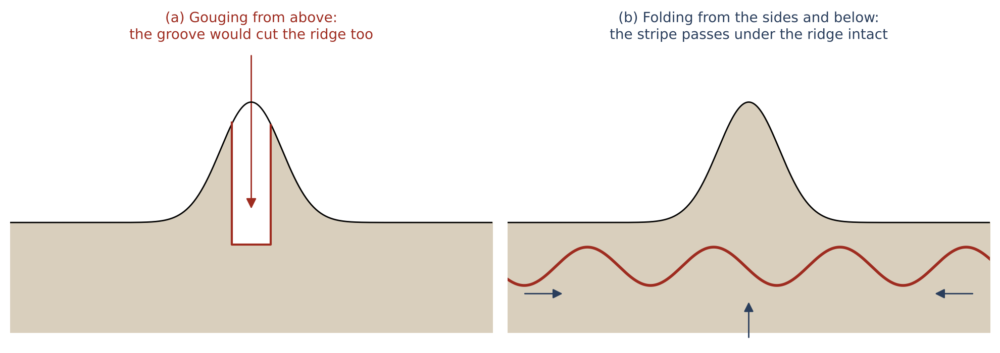
B.6 畝における連続性と屈曲――最初の読み
観測。ずれのない連続性。二つの交差の接近図（図 B.4–B.5）では、各縞は畝に達し、同じ点からその反対側へ続く。この解像度で見える横方向の跳びはない。方向の変化。縞の方向は畝との出会いで変化する。畝の西では、北の縞は下へ向かい（画像上で約 14°、さらに北の弧で）、南の縞は上へ向かう（約 8°）。西への収束。縞は西へ――先端の方へ――収束する（Part C）。一つの赤道の平行線は収束しない。畝の西では、縞はこの幾何から外れる。言い換えれば、畝の東では縞は一つの赤道のまわりの緯線のように振る舞う（B.1）。その西では、最も外側の縞が互いの方へ向かう――北のものは南へ、南のものは北へ――あたかもその間にある共通の領域へ引き寄せられているかのようである。
モデル。収束は洋梨体の先端が降りた領域を指し示している（Part C）。縞は先行側の壁の痕跡である。先端が横たわった場所では壁はその周りに集められ、そのため縞はその方へ向かう。太平洋全体にわたってデータの中で縞をトレースすると、北、中央、南の系の縞がすべて同じ先端へ導かれることがわかる（C.5）。
状態。これは鉛直誇張（30 倍と 200 倍）を伴う斜めの眺めの上での最初の読みである。誇張のない平面図の上で測定しなければならない（Part G）。表示のパラメータ。これらの眺めは、飛行機の窓から見るように地球儀を斜めに見て、海底の低い起伏がそもそも見えるように、すべての高さを――一方の眺めでは 30 倍、他方では 200 倍に――拡大している。画像上の角度のゆがみ。二つの手順はいずれも目が縞を見つけるのを助けるが、いずれも画像から読み取られる角度をゆがめる。丸い地球儀を斜めに見ると、まっすぐな線が曲がって見えることがある。誇張された面の上では、畝の斜面のために、線が単に登っているだけの場所で方向を変えているように見えることがある。したがって 14° と 8° の角度は画像上の角度であり、地球の表面上の角度ではない。畝の両側での各縞の真の方向を定めるには、同じ場所を、真上から直接見た、実寸の高さをもつ平面図の上で、目測ではなくカーソルの座標によって読み取る必要がある（Study 6）。
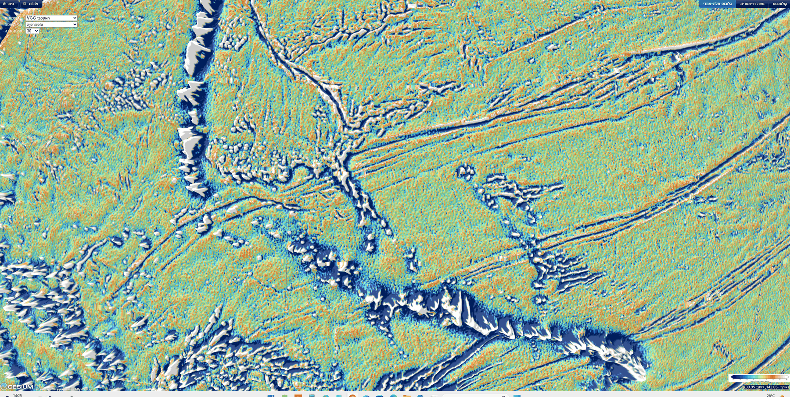
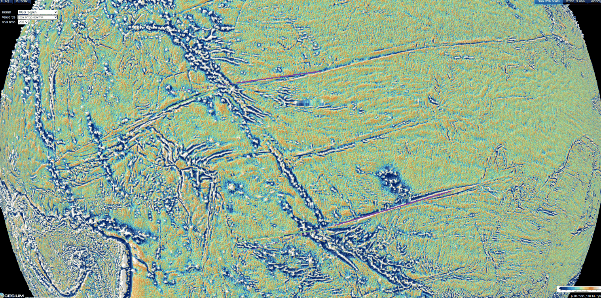
B.7基部の下の深部マントル
観測。洋梨体の基部の下では、下部マントルの最深部の層が投票マップの五つのモデルすべてで低速度である（コッタールとレキッチ 2016）。そしてこの場所は、さらに二つのモデルの 等値線の内側にある。太平洋の低速度領域の中心は、基部から南南西へ 1,480–1,660 km にある（Paper 3、§E.4）。
用語の説明。地震による地震波は地球全体を横切り、その到達時間から各深さでの波の速度の地図――「トモグラフィーモデル」――が築かれる。低速度の解釈。波がその深さの平均より遅く進む場所では、物質は周囲より高温であるか、組成が異なる――たとえばより高密度で鉄に富む。核の上、太平洋の下とアフリカの下には、低速度の物質からなる二つの大きな領域、すなわち大規模低速度領域（LLVP――下部マントルの大規模低速度領域）がある。投票マップ。異なる研究グループは異なるトモグラフィーモデルを構築し、それらの地図はあらゆる細部で一致するわけではない。コッタールとレキッチ（2016）の投票マップは、数えることでこれに対処する。マントル最下部の各場所について、五つのモデルのうちいくつがそこを低速度と定めるかを調べるのである。五票すべてを得た場所は、どのモデルでも低速度である。等値線。 の等値線は、同じ領域を描く別の、より厳しい方法である。それは、波がその深さの平均より少なくとも 1 パーセント遅い範囲を囲む線である。キリティマティの下では投票は全会一致であり、さらに二つのモデルもそこをそれぞれの 等値線の内側に置く。したがって洋梨体の基部は、太平洋の低速度領域の上、その中心のやや北北東に立っている。
モデル。解放の後、洋梨体は一体のまま地球の中へ回収され、地球に吸収された（E.3）。その重い、鉄に富む部分は、洋梨体が立っていた場所の下のマントル最下部へと降りた。われわれは――深部の領域の性質はなお未解決であるため軽い留保を付して――そこにある高密度で鉄に富む堆積が太平洋の低速度領域の一部であると提案する（Paper 3、§E.4）。一つの出来事の二つの痕跡。そうであれば、海底の上の縞とマントル最下部の低速度領域は、同じ出来事の互いに補い合う二つの痕跡である。上の痕跡は壁が横たえられた場所を、深部の痕跡は重い物質が落ち着いた場所を示す。
B.8後行側――洋梨体の背面
観測。先端の西、西太平洋とインド洋の間の帯では、海底とその縁辺はあらゆる方向にしわが寄り、めくれている。フィリピンとマリアナの弧、インドネシアの弧、そしてオーストラリアの北にある鉤形に湾曲したバンダ弧である（図 B.6）。地域的な対比。基部の東では痕跡は平行でまっすぐである（B.1）。先端の西では、それらは湾曲し、密集し、多くの方向を向いている。
モデル。これは洋梨体の背面――自転の方向から遠ざかる方を向いた側――である。この側は洋梨体が回収されるときに無秩序にしわが寄り、一方その先行側の壁は平行な縞として横たえられた。二つの壁の違い。二つの側の対比は、洋梨体が立っている間に各側が経験したことから生じる。先行側の壁は長い間一つの方向、すなわち地球の自転の方向に引き伸ばされた。壁はこの一つの方向をその回帰の中へと持ち込み、そのためすべてがその方向を共有する線として横たえられた。背面にはそのような単一の引きはなかった。洋梨体が回収され吸収されたとき、背面は自らの方向をもたずに降り、しわが寄った。じゅうたんをまっすぐ引くのではなく、山のように落とすとしわが寄るのと同じである。
洋梨体の長さとの一致。基部（キリティマティ）からの測地的な測定では、弧は洋梨体の長さが届く距離にある。バンダ弧は 8,100 km、フィリピンとスラウェシは 9,040–9,070 km、ジャワは 10,300 km である――これに対し、先端の領域を含む洋梨体自身の本体の長さは解放時に 8,890–9,000 km であった（C.4）。背面は西で、傾いた先端の下に立っていた。洋梨体の回収はゆっくりであった。その質量は地球に吸収されてしわを残し、背面ではそのしわがしわの寄った弧である。このように横たえられた背面は、基部から西へ洋梨体の長さ一つ分ほどまでその痕跡を残すはずである。木の類推。切り倒された木が自らの高さに等しい地面の区間に沿って横たわる像は、この長さの一致を説明するためだけに用いる。洋梨体は倒されたのではなく、回収されたのである。弧は 8,100 から 10,300 km の範囲、この長さの両側にある。
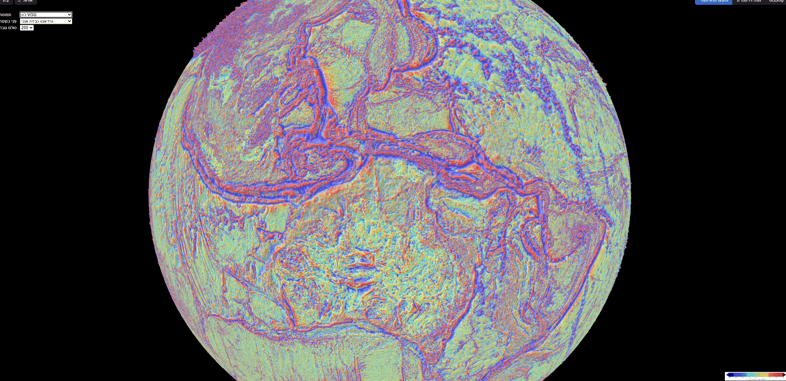
現在われわれが手にしているもの。縞の帯：縞は一つの赤道のまわりに一つの帯をなす（B.1）。基部の位置：洋梨体の基部はこの赤道の上にある（B.2）。配置の非対称性と系の幅：縞は基部の東、自転に面した側にあり、その両側、北と南にある（B.3–B.4）。畝の下での連続性：縞は、褶曲がそうであり溝がそうでないように、畝の下を通過する（B.5）。収束：畝の西で縞は互いの方へ向かう（B.6）。深部の痕跡：基部の下の深部マントルは低速度である（B.7）。背面の範囲：西にある洋梨体の背面は、基部から洋梨体の長さ一つ分ほどの距離でしわが寄っている（B.8）。次の Part は、縞が収束する場所まで縞を追跡する。
洋梨体の先端――月が形成された場所
Part B は、畝の西で縞が互いの方へ向かう地点で終わった。この Part は、縞が向かう領域に何があるかを問う。本シリーズでは、月は洋梨体の先端の上に築かれ、先端は自転に遅れて基部の西にあった（Paper 3）。洋梨体が地球の中へ回収されたとき、先端は基部の西に降りた。したがって縞が収束する領域は先端が降りた場所であるはずであり、それには三つの要求がある。その領域は先端と同じ幅でなければならない。基部の西になければならない。そして先端の面がその上に載っていた月の何らかの痕跡を保持していたなら、その痕跡はその内側に見出されなければならない。以下の節はこの三つの要求を順に検討する（C.1–C.3）。C.4 は縞の系全体の長さを洋梨体の長さと比較し、C.5 はデータの中で太平洋全体――北、中央、南――の縞を同じ先端まで追跡する。
C.1二つの屈曲
まっすぐな進路を離れる点。基部の西で、北の縞は下へ（南へ）曲がり、南の縞は上へ（北へ）曲がる（図 A.1、黒い矢印）。屈曲の間の距離（橙色の矢印）は次のとおりである。
| 値 | |
|---|---|
| 北の屈曲 | 北緯 23.8°、東経 164.9° |
| 南の屈曲 | 南緯 5.3°、東経 173.2° |
| 距離 | 3,360 km（30.2°） |
| 範囲（各点を 15 ピクセル移動） | 3,040–3,700 km |
| 中心 | 北緯 9.3°、東経 169.3° |
表の読み方。表は、最も外側の縞がそのまっすぐな進路を離れる二つの場所、地球の表面に沿ったその間の距離、そしてその中間点を与える。われわれはこの中間点を先端の中心とする。範囲の計算。四行目の範囲は、距離が屈曲の正確な標示にどれほど依存するかを示す。各屈曲を画像上であらゆる方向に 15 ピクセル移動させても、距離は 3,040 から 3,700 km の間にとどまった。
接触域およびドームとの比較。なぜこの距離を接触域およびドームと比較するのか。縞が降りていく先端の周りに集められたために向きを変えたのであれば、二つの屈曲は先端の両縁を示し、その間の距離が先端の幅を定める。この幅は Paper 3 から独立に知られている。月は解放時に幅 3,000 km の接触域の上に載っており、それが載っていたドームの幅は 3,650 km であった。この幅は、解放時に月が載っていた 3,000 km の接触域と、その上の 3,650 km のドームに一致する（Paper 3）。測定された距離 3,360 km はこの二つの値の間にあり、その範囲 3,040 から 3,700 km は両方を覆う。
縞の系との整列。北の屈曲はパイオニアの平行線の上にある（縞の系の赤道から北へ 30.0°、パイオニアは 30.1°）。南の屈曲は系の赤道そのものの上にあり（そこから 0.1°）、基部（1.6°）と同様である。したがって屈曲は縞の間に無作為に位置しているのではない。それぞれが系自身の線の上に落ちる――一つは縞の上に、一つは基部もその上にある赤道の上に。
C.2先端は基部の西にある
先端の中心の位置。先端の中心は基部の西約 3,760 km（以前の版では 3,770 km）にあり、この位置はそれを後行側に置く。先端の遅れ。洋梨体は後ろへ傾いていた――先端とその上の月は地球の自転に遅れた――そして洋梨体が回収されるとき、先端は基部の西に降りた。先端は表面の高く上にあったので、基部のものよりはるかに大きな円の上を運ばれなければならなかった。本シリーズでは先端は基部に遅れ、そのため洋梨体は自転の方向に逆らって後ろへ傾いた（Paper 3）。洋梨体が地球の中へ回収されたとき、先端はそれが傾いていた場所――西側――に降りた。
系における緯度の整列。基部は縞の系の赤道の上にあり（そこから 1.6°）、先端の南縁もそうである（南の屈曲、そこから 0.1°）。先端の中心はこの赤道の北約 15° にあり（11° の当てはめで 14.9°。傾き 10° で 14.4°、傾き 14° で 16.4°）、赤道の上にある南の屈曲とパイオニアの平行線の上にある北の屈曲の間にある。解放の緯度との区別。これは Paper 3–4 の解放の緯度 22.5° ではない。その値は解放の瞬間に地球の中心から見た月の中心の方向であり、一方、刻印は洋梨体が回収されるときに先端が降りた場所であり、縞の系の中にある。これらは二つの異なる量である。自転軸は今後の研究である。
C.3地球上の月の海――鏡像
面と面の接触。この節の問いは、先端の面がその上に載っていた月の痕跡を保持していたかどうかである。Paper 3 では、月の表側――地球に向いた側――が先端と接触していた側であり、その月の海は、地球の圧力と熱が洋梨体から月へと通過した開口部である（雨の海が主要な通路、晴れの海が副次的な通路）。太平洋の海底がこの接触の痕跡を保持しているなら、それは表側の月の海の模様を、正しい配置と正しい大きさで保持しているはずである。配置は鏡像であり、大きさは今日の月より大きい。われわれはこの二点から始める。
なぜ鏡像か。月と洋梨体の先端は向かい合って立っていた。互いに向かい合う二つの物体の間では、月の表側の東は地球の西に落ちる。接触の刻印は表側の鏡像でなければならない――北は保たれ、東と西は入れ替わる。ゴム印がその理由を示す。印の文字は、紙への印字が正しく読めるように反転して彫られている。印と紙は互いに向かい合い、印字は印の鏡像である。同様に、平らな手のひらを窓に当て、それを外から見てみよう。自分の手のひらを見ていたときに右側にあった親指が、今は左側にある。北と南が入れ替わらないのは、月と地球が同じ軸のまわりに回転し、同じ「上」を共有していたからである。入れ替わるのは東と西だけである。
最初の読み。重力勾配マップの上で、著者は初め目によって三つの円形の特徴を雨の海、晴れの海、神酒の海として標示した（図 C.1）。その間の雨の海–晴れの海の距離 1,420 km は、収縮によって拡大された月面上の距離（下記）に一致したが、三つの点は鏡像ではなく正像をなしていた。その場合、神酒の海は正像の写しでの位置から 574 km、鏡像での位置から 2,500 km のところに落ちた。読みの置き換え。正像の刻印は接触して立つ二つの面からは生じえないので、読みは置き換えられた。この段階を論文に残すのは、それが調査の過程の一部だからである。最初の標示は接触の幾何が構築される前に目によって行われ、それらがすべて正しくはありえないことを示したのは鏡像の要求であった。更新された読み（下記）は、著者が最も確信している一つの標示、雨の海を保持し、他のものがどこになければならないかを鏡像の規則に予測させる。
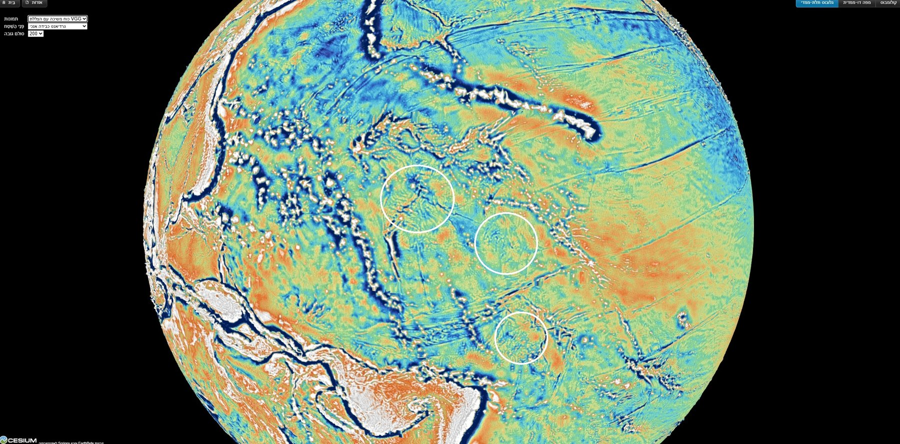
縮尺。月は先端の上に載っていたとき以来収縮した。同じ質量で、先端の上の本体の密度（1,300 kg·m）から今日の密度（3,344）へと変わり、その表面上のあらゆる長さは 倍短くなった（本シリーズの段階を経ると、0.83 でレンズ形から球へ、続いて 1,890 1,737 km：1.31）。今日の月で 1,023 km である雨の海–晴れの海の距離は、先端の上では約 1,400 km であった。
収縮の機構。理由は短い。月の質量は変わらなかった。その密度が、先端の上の膨らんだ本体のものから今日の月のものへと上昇したのである。同じ質量では、体積は密度の上昇に反比例して小さくなり、半径――そしてそれとともに表面上の二点間のあらゆる距離――はその比の立方根に従って小さくなる。 ここで kg·m は先端の上の本体の密度、 kg·m は今日の月の密度である。風船の類推。空気を抜いてより小さくした風船も同じことを示す。その上に描いた二つの点は、半径と同じ比で互いに近づく。第二の計算経路。括弧内の第二の経路は、同じ本体を本シリーズの段階を通して追う。まず、先端に接続したまま、扁平でレンズ形の月が球へと丸くなった。この球形化は解放の前に起こり、表面上の長さを 0.83 の係数で変える。次いで、解放以降、球形の月は半径 1,890 km から 1,737 km へと収縮した。二つの段階を合わせると 1.31 となる。二つの経路は数パーセント以内で一致し、われわれは 1.37 を用いる。したがって今日 1,023 km である雨の海と晴れの海の間の距離は、先端の上での月の大きさでは約 1,400 km であり、地球上の表側はこの大きさで探さなければならない。
地球上の表側の刻印は鏡像であり（北は保たれ、東と西は入れ替わる）、今日の月に対して 倍に拡大されている。
鏡像の配置。雨の海を著者が標示した場所（北緯 13.19°、東経 179.04°）にとどめ、表側を縮尺 1.37 の鏡像として地球へ移すと、晴れの海はマーシャル列の上に、神酒の海はオーストラリアの北東の弧の間に、接触域の中心は雨の海の傍らに落ちる（図 C.2）。固定点。像を配置するには一点を固定しなければならない。鏡像の規則と縮尺は模様の形と大きさだけを定め、それが海底のどこにあるかは定めないからである。われわれは主要な通路である雨の海を固定し、他の各特徴がどこに落ちなければならないかを鏡像の規則に決めさせた。
代わりの配置。代わりに晴れの海をその場所にとどめると、雨の海はキリティマティの北、縞が横切る静かな場に落ちる。鏡像による二つの配置のうち、著者は最初のものがマップ上の円形の特徴を示していると判断する。二つの配置は同じ規則に従い、最初の二つの標示のどちらを保持するかだけが異なる。読者が比較できるように、図は両方を示す。
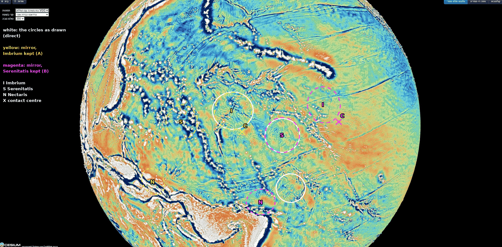
| 月の上 | 地球の上 | 先端の中心から | 基部から | |
|---|---|---|---|---|
| 雨の海 | 北緯 37.6°、東経 340.0° | 北緯 13.19°、東経 179.04° | 1,150 km | 2,870 km |
| 晴れの海 | 北緯 27.3°、東経 18.4° | 北緯 11.5°、東経 166.3° | 410 km | 4,140 km |
| 接触域の中心 | 北緯 24.1°、東経 335.2° | 北緯 8.2°、西経 179.3° | 1,260 km | 2,510 km |
| 神酒の海 | 南緯 15.2°、東経 35.0° | 南緯 3.1°、東経 156.6° | 1,970 km | 5,130 km |
地球の上：1.37 での鏡像。雨の海は著者の標示であり、他は鏡像の規則が予測する場所である。先端の刻印：半径約 1,680 km。
表の読み方。各行は表側の一つの特徴を表す。第一の列は今日の月の上でのその位置を示す。第二の列は地球の上でのその位置を示す。雨の海については著者の標示であり、他の特徴については鏡像の規則が予測する位置である。最後の二つの列は、地球上のその位置の先端の中心（C.1）および洋梨体の基部からの距離を示す。検定の基準は第三の列にある。先端と接触していた特徴は先端の刻印の内側、すなわちその中心から約 1,680 km 以内――二つの屈曲の間の幅 3,360 km の半分――になければならない。
刻印の内側の構造。雨の海、晴れの海、接触域の中心はすべて先端の刻印の内側に落ちる。副次的な通路である晴れの海は先端の中心からわずか 410 km、刻印の境界の奥深くに落ちる。主要な通路である雨の海は 1,150 km、接触域の中心は 1,260 km に落ちる。刻印の外側の構造。神酒の海は先端の中心から 1,970 km、刻印の境界のすぐ外側にある。この所見は月の上でのその位置と合致する。月の上でも神酒の海は接触域から遠く南にあり、それが刻印のすぐ外側に落ちることは、その位置から予期されることである。
次の測定。ここで測定したのは、予測された位置と目に見分けられる特徴との一致である。鏡像の位置にある特徴は、これからマップ上で標示し測定しなければならない（Part G）。これが Study 8 である。晴れの海、神酒の海、接触域の中心、および表側の他の月の海の、縮尺 1.37 での鏡像の位置にある特徴を標示し、そのそれぞれに円形の特徴が立っているかどうかを検定する。
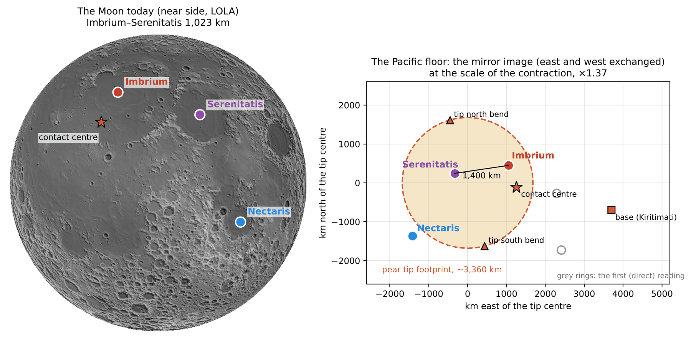
C.4 縞の長さは洋梨体の長さである
先行側の壁の塗り広げ。縞は洋梨体の先行側の壁である。洋梨体のゆっくりとした回収の間、その先行側の壁は自転の方向に海底に沿って塗り広げられた。壁の遠い端が最も大きく遅れ、中央はそれより少なく遅れ、壁はそれ自体の上に折り返された。その質量は地球の内部に吸収されてしわ――縞――を残した。このように横たえられた壁は、そのもとの長さにほぼ等しい長さにわたって海底を覆うはずである。切り倒された木の像。切り倒された木は自らの高さに等しい地面の区間に沿って横たわる。この像は長さの一致だけを説明する。壁は倒されたのではなく、洋梨体が回収されるときに塗り広げられたのである。
共回転線。洋梨体の長さは共回転線によって定まる。地球の一日ごとに一回転する物体は、地球の中心からの距離が大きいほど速く動く。他方、地球のまわりの自由軌道にある物体は、距離が大きいほどゆっくり動く。ある一つの距離で二つの速度は等しくなる。そこでは、地球とともに運ばれる物体はすでに自由軌道の速度で動いており、もはや保持される必要がない。この距離が共回転線である。解放時の値。本シリーズでは、洋梨体は月の中心がこの線に達するまで伸びた。そこで月は分離し始め、線の約 210 km 外側で解放された（Paper 2–4）。解放の瞬間、地球の一日は 5.77 時間であった。当時の赤道上で、共回転線は地球の中心から 16,399 km にあった。解放の緯度 22.5°（Paper 3–4）――月が立っていた方向――に沿っては、それは中心から 17,287 km にあった。解放時の月の半径は 1,890 km であり、その中心は線の約 210 km 外側、17,497 km にあった。
二つの長さ。これらの値から、月を洋梨体の一部とみなすかどうかに応じて、二つの異なる長さが導かれる。月を洋梨体の先端とみなすとき、洋梨体は共回転線に達した。地球の表面から線までの長さは – km であった。洋梨体自身の本体は、月を除くと、月がその上に載っていた場所で終わっていた――解放時に、月の中心から月の半径一つ分内側、地球の中心から km、線の約 1,700 km 手前である。したがって地球の表面からのその長さは – km であった。月を除けば、洋梨体は共回転に達しなかった。それは線の月の半径一つ分ほど手前で、月の外側の面の月の直径一つ分手前で終わっていた。
| 長さ | |
|---|---|
| 月を先端とする洋梨体（共回転線への到達）：地球の表面（6,602–6,721 km）から解放の緯度における共回転線（17,287 km、一日 5.77 時間）まで | 10,570–10,690 km |
| 先端の領域を含む洋梨体自身の本体：地球の表面から解放時に月が載っていた場所（ km）まで | 8,890–9,000 km |
| 海底の上の縞の系：先端の中心（北緯 9.3°、東経 169.3°）からクリッパートンの東端（北緯約 10.3°、西経 105°）まで | 9,360 km |
| 洋梨体の基部（キリティマティ）から同じ端まで | 5,870 km |
| 先端の中心から洋梨体の基部まで | 約 3,760 km |
表の読み方。最初の二行は、月を含む場合と含まない場合の、解放時の洋梨体の二つの長さである（本シリーズにおける当時の地球の半径は 6,602 から 6,721 km）。三行目は海底の上の縞の系の長さであり、先端が降りた場所（C.1）から、アメリカの近くにある最も長い縞の遠い東端までである。最後の二行はこの長さを基部で分ける。基部の東の部分と、先端と基部の間の部分である。（二つの部分の和は全体より大きい。先端の中心、基部、クリッパートンの端が単一の大円の上にないからである。）
月を痕跡から切り離す。縞は第二の長さ――先端の領域を含む洋梨体自身の本体――と比較される。縞は先端の領域を含む洋梨体全体の痕跡である。月が載っていた 3,000 km の接触域は洋梨体とともに降り（C.1–C.2）、縞の系はその中心から測られる。月は切り離されて洋梨体を離れ、海底の上にはないので、月が加えた長さの成分は痕跡の一部ではない。一致。先端の場所からアメリカまでの縞の系は、洋梨体自身の本体より 4–5% 長い。長さ 8,890 から 9,000 km の本体に対し、海底の上の長さ 9,360 km の痕跡が対応する――360 から 470 km 長い。独立性。縞との一致において、この長さに到達するように定められたパラメータは一つもない。共回転線は解放時の地球の自転から導かれ（Paper 2）、月の半径は Paper 3 で定められ、縞の長さはマップから読み取られた。
C.5 太平洋全体の縞は洋梨体の先端へ導かれる
大洋全体への拡張。C.1–C.4 節は北太平洋の縞から先端を見出した。畝の西にあるその二つの屈曲が先端の縁を示す。しかし北太平洋の縞は、海洋底にある線の一部にすぎない。中央の系と南の系。さらに南では、中央の線が南アメリカから西へ走り、サラ・イ・ゴメスとイースター島に沿って進み、トゥアモトゥに沿って北西へ向きを変える。そしてさらに南では、長い線が大洋の遠い南東の端から北西へ走る。共通の進路。著者の洞察は、これらの線はすべて、アメリカから西へ追うと先端へ向かうというものである。南の線はトンガ–ケルマデックの近くで北へ曲がり、中央の線は同じ領域へ北西に向かう（図 C.4）。縞が洋梨体の痕跡であるなら、北、中央、南の系の線はすべて、先端が降りた一つの場所へ導かれるはずである。この節は、海洋底の深さの全球グリッドの上でこれを検定する。
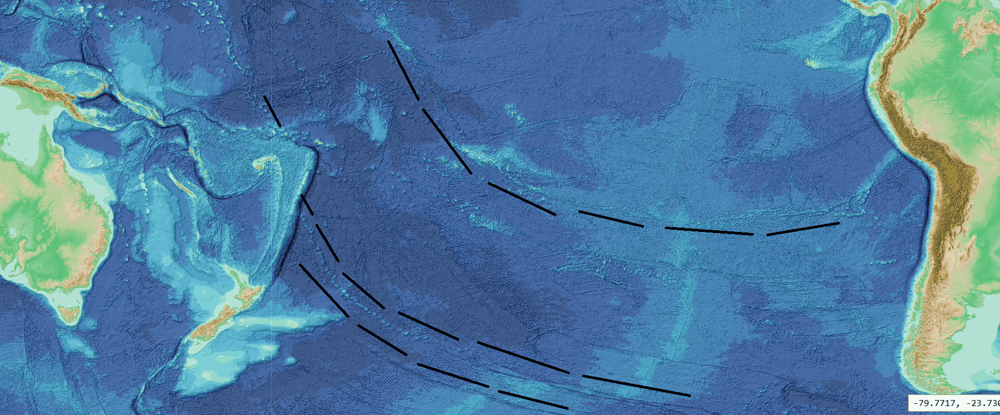
現象。北の縞は畝の西で先端の方へ収束する（B.6、C.1）。著者のトレースは同じ収束を中央の系と南の系の線へと移す（図 C.4）。知識の空白。収束はこれまで地球儀上の眺めの上でのみ、しかも北の縞についてのみ読まれてきた。三つの系をあわせて、あらかじめ定めた標的へ向けてデータの中でトレースされたことはなかった。研究の問い：アメリカ側の端から西へデータの中でトレースしたとき、北の系（メンドシノ、マレー、モロカイ、クラリオン、クリッパートン）、中央の系（サラ・イ・ゴメス–イースター–トゥアモトゥ–ライン諸島）、南の系（ルイビル海山列を伴うエルタニン系、ツバル–ギルバート–ラタック列）の縞は洋梨体の先端へ導かれるか。
データの出典。ここで用いる線は海洋底の地図ですでに図示されており、その名称は近くの場所や現象にちなんで付けられている。本論文の他の部分と同様に、名称はマップ上の位置の目印としてのみ用いる。データは GEBCO 2026 グリッド（GEBCO Compilation Group 2026）であり、船舶による水深測定と衛星重力データから毎年刊行される、海洋底の深さの統合全球ファイルである。陰影起伏。グリッドを一方の側から照らす――「陰影起伏図」――と、海底の線は光と影の明瞭な帯として見える。低い太陽が耕された畑の畝を際立たせるのと同様である。ここで新しい点：三つの系の線を、トレースの前に書き留めて固定した一つの規則で、本論文から取った二つの標的へ向けて、あわせて検定する。
研究仮説。西へその経路を追うと、北、中央、南の系の縞は洋梨体の先端へ導かれる。その西への延長は幅 3,000 km の最終接触域の内側、あるいは少なくとも先端全体――6,000 km の接触域――の内側を通過する。そして先端と関係なく選ばれた線は最終接触域に達しない。
研究の種類：全球グリッド上の定量的研究であり、作業の規則は線を一本も引く前に文書で定められた（2026 年 10 月 18 日）。目標。最終接触域――解放の際に月が載っていた接触域――：中心は北緯 8.7°、東経 167.7°、屈曲の中心（C.1）から 190 km、半径 1,500 km（3,000 km の半分）。洋梨体の先端――縮小の前の 6,000 km の接触域――：中心はおよそ北緯 6°、西経 179.5°、C.3 の鏡像の接触域の中心から 250 km、半径 3,000 km。データ：GEBCO 2026 の陰影起伏図を三つの区画――北（北緯 0–45°、西経 180–100°）、南（南緯 0–65°、西経 180–70°）、先端の領域（南緯 45° から北緯 25°、東経 150–180°）――で用い、1 度あたり 30 点の解像度で一枚の地図に接合した。 トレースの手順。各線は、そのアメリカ側の端から西へ 0.5° 刻みでたどる。各ステップでは、最後の点の前方に長さ 2–2.5° の短い試行線の扇が置かれる。試行線は最大 10° 回転させ、横に 0.2–0.4° ずらす――方向フィルターである――。ステップは、海底がその線を横切る方向に最も鋭い縁を示す試行線へ進む。鋭さは比として定義される。線を横切る最も急な変化を、その周囲の典型的な変化で割ったものである。比が 4.5 以上ならステップは連続、4.0 から 4.5 の間なら弱い、4.0 未満なら橋渡しとみなす。無作為な場所と方向では 100 の比のうち 95 が 4.2 未満に収まり、長さ 10° の無作為な線では中央値は支持されたステップ 10% である（100 本中 90 本が 35% 未満）。線が曲がる所や列が向きを変える所では、拡大図上で目視により選んだ点で経路を誘導し、すべての屈曲を目視で確認した。それでも位置はデータに吸着し、支持されたステップの割合はデータのみから導かれる。 延長。大円――球面上の最短経路、まっすぐな針路が地球儀の上でたどる線――を、支持された経路の最後の三分の一に当てはめ、西へ最大 12,000 km まで延長する。各中心への最接近距離を記録する。 判定は事前に定めた。延長がその中心から 1,500 km 以内を通れば最終接触域、そうでなく先端の中心から 3,000 km 以内なら先端の領域、それ以外は外れとする。トレースしたすべての線を報告し、事後に除いたものは一本もない。 参照線：著者が先端への経路として描かなかった三本の線――北のパイオニア、中央のガラパゴスとマルケサス――を同じ規則でトレースした。 感度：当てはめを各経路の最後の四分の一と最後の半分について繰り返した。
トレースの方法論。研究は、各縞の上の二点を通る直線から始まった。南の系の線がトンガ–ケルマデックの近くで北へ曲がる著者の描画は、南の線が湾曲しており、その実際の経路に沿ってたどる必要があることを示した。そこで研究は、同じ目標と同じ判定のもとで、トレースによって行われた。データ中の経路。北の系：各縞は北アメリカ沿岸の起点から西へ西経 154–174° までたどられ、そこでハワイ海嶺、ライン諸島、あるいはジョンストンと中部太平洋海山群に達する。中央の系：サラ・イ・ゴメス–イースター（ステップの 66% が支持）、東太平洋海膨の西からガンビエまで（60%）、トゥアモトゥ（78%）、そしてライン諸島であり、目視ではジョンストン（西経 169.5°、北緯 16.7°）まで連続している。別の西の枝が北緯 11° でライン諸島から分かれる。南の系、上の経路：エルタニン系の北の筋（77%）、ルイビル海山列への約 150 km の段差（67%）。ルイビル海山列は北北西へ進み、西経 175°、南緯 26° のケルマデック海溝に達してそこで終わる。トンガとフィジーの先では、ツバル–ギルバート–ラタック列（74%）が北西へ進み、そのまま最終接触域の中へ、東経 167.9°、北緯 10.7° まで入る――D.1 が西のこての畝として読む列である。南の系、下の経路：エルタニン系の南の筋（64%）。データの重み。経路の支持率 60–78% は、無作為な線の 10% をはるかに上回る。図 C.5 はすべての経路を示し、ステップ 6 の表が測定をまとめる。
表は各経路について、データが最後にそれを支持する場所とそのときの進行方向、どれだけ延長する必要があったか、そしてその延長が二つの中心にどこまで近づくかを示す。行は最終接触域からの距離の順に並べてある。その列の色は、最終接触域の内側の緑から、その外側の橙へと移る。
下の表の読み方：五番目の列を下へたどる。 最終接触域からの距離。十本の経路のうち六本が最終接触域の中心から 1,500 km 以内を通り、そのうち五本は 450 km 以内である。南の上の経路が 166 km、最終接触域の中へ入るツバル–ギルバート–ラタック列が 190 km、クラリオンが 288 km、南の下の経路が 300 km、モロカイが 434 km、そしてマレーが 1,274 km である。クリッパートンはわずか 14 km の差で最終接触域を外れる（1,514 km を通る）。先端の領域。十本の経路はすべて、先端の領域の中心から 3,000 km 以内に達する。中央の経路は、その西の枝を含めて、1,340–1,601 km でそれを達成する。参照線。著者が先端への経路として描かなかった三本の参照線（パイオニア、ガラパゴス、マルケサス）のうち、最終接触域から 1,500 km 以内に近づくものは一本もない（1,656–2,590 km）。 結果の安定性。大円の当てはめを最後の三分の一ではなく各経路の最後の四分の一または最後の半分について行っても、六本のそれぞれが判定を保つ（62–1,274 km）。
偶然の検定。偶然だけで何が得られるかを調べるため、太平洋の無作為な場所から縞の方向（北で 240–300°、南で 290–340°）に大円を始め、経路と同様に西へ延長した。それらは 100 回の試行のうち 44–55 回で最終接触域に、80–88 回で先端の円に達する。任意の西向きの方向では、それぞれ 25 回と 54 回である。
| 系 | 経路 | 最後の信頼できる点、方向 | 延長（km） | 最終接触域まで（km） | 先端の中心まで（km） | 判定 |
|---|---|---|---|---|---|---|
| 南 | 上：エルタニン（北の筋）＋ルイビル | 西経 174.6°、南緯 26.8°、NNW（335°） | 4,380 | 166 | 1,025 | 最終接触域 |
| 南 | 上、フィジーの先：ツバル–ギルバート–ラタック（トレース、延長なし） | 東経 167.9°、北緯 10.7°、NW（319°） | 0 | 190 | 851 | 最終接触域 |
| 北 | クラリオン | 西経 154.3°、北緯 13.8°、W（270°） | 4,170 | 288 | 760 | 最終接触域 |
| 南 | 下：エルタニン（南の筋） | 西経 154.2°、南緯 52.5°、NW（325°） | 7,690 | 300 | 928 | 最終接触域 |
| 北 | モロカイ | 西経 169.7°、北緯 18.9°、WSW（257°） | 2,660 | 434 | 1,147 | 最終接触域 |
| 北 | マレー | 西経 168.6°、北緯 27.0°、W（260°） | 2,980 | 1,274 | 2,004 | 最終接触域 |
| 北 | クリッパートン | 西経 165.7°、南緯 0.1°、WSW（258°） | 2,720 | 1,514 | 944 | 先端の領域 |
| 北 | メンドシノ | 西経 169.1°、北緯 36.8°、WSW（253°） | 3,480 | 1,826 | 2,770 | 先端の領域 |
| 中央 | 北緯 11° の西の枝 | 西経 171.6°、北緯 11.2°、NW（318°） | 短い | 2,094 | 1,340 | 先端の領域 |
| 中央 | サラ・イ・ゴメス–イースター–トゥアモトゥ–ライン諸島、ジョンストンまで | 西経 169.7°、北緯 16.4°、NW（323°） | 短い | 2,441 | 1,601 | 先端の領域 |
| 参照線（著者が先端への経路として描かなかったもの） | ||||||
| 北 | パイオニア | 西経 173.4°、北緯 32.8°、WSW（251°） | 2,910 | 1,656 | 2,563 | 先端の領域 |
| 中央 | ガラパゴス | 西経 150.9°、南緯 5.8°、W（260°） | 4,420 | 2,205 | 1,769 | 先端の領域 |
| 中央 | マルケサス | 西経 155.3°、南緯 14.7°、W（265°） | 4,220 | 2,590 | 2,381 | 先端の領域 |
距離は、各経路の最後の三分の一の大円延長（ツバル–ギルバート–ラタック列については、トレースした経路そのもの）が、最終接触域の中心（北緯 8.7°、東経 167.7°）と先端の中心（北緯 6°、西経 179.5°）に最も近づく距離である。方向：最後の信頼できる点での経路の方向で、北から時計回りの度数。緑：最終接触域の内側、近いほど濃い。橙：その外側、遠いほど濃い。データ：GEBCO 2026。
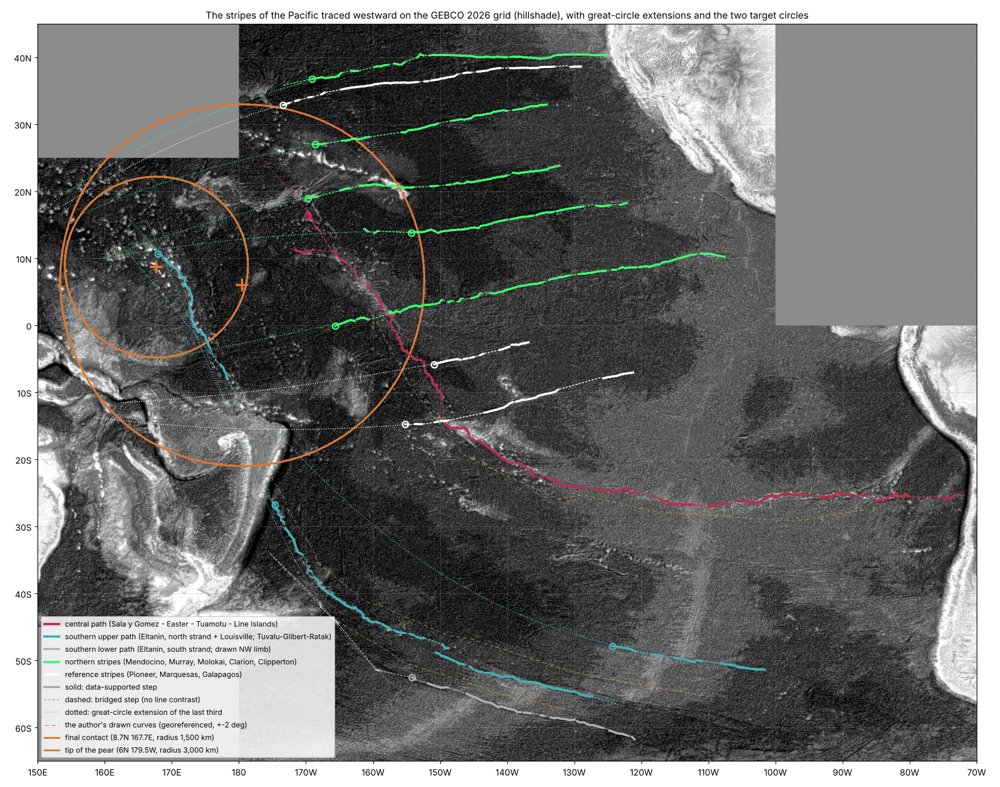
結果。研究仮説は支持される。データの中でアメリカ側の端から西へトレースすると、太平洋の北、中央、南の系の縞は洋梨体の先端へと導く。経路の幾何学的まとめ：トレースした十本の経路はすべて先端の領域の中へ達し、そのうち六本が最終接触域の中心から 1,500 km 以内を通り、三本の参照線はいずれもそうならない。南の系のふるまい：太平洋の遠い南東端に始まる二本の南の経路は北西へ進み、トンガ–ケルマデックの近くで北へ曲がり、その延長は最終接触域の中心から 166 km と 300 km を通る。ツバル–ギルバート–ラタック列そのものはその中へ入る。
モデルにおける読み。われわれは、北、中央、南の系の縞が、洋梨体がその先端へ収束したときの流れの痕跡であると提案する。 先行側の壁：洋梨体の先行側の壁は、その基部の幅全体、9,000–11,000 km にわたり、キリティマティの北と南に広がっていた（B.4）。洋梨体が回収されるとき、壁は先端のまわりに集められ（B.6）、その線は先端が降りた場所へ収束しながら海底に置かれた。収束の方向：南の縞は北西へ進み、トンガ–ケルマデックの近くで北へ曲がって先端へ向かって続く。中央の線はトゥアモトゥとライン諸島に沿って北西へ向きを変える。北の縞はアメリカから西へ先端に向かって進む。経路の終わりの列：中央の経路と南の経路は、Part D が先端の中のこての畝として読む二つの列――東のライン諸島と西のツバル–ギルバート–ラタック列――の上で終わる。
限界。見える線のない延長：命中の一部は、見える線のない区域を横切る延長に依存しており、その長さはモロカイの 2,660 km から南の下の経路の 7,690 km に及ぶ。南の上の経路の橋渡し：この経路がツバル–ギルバート–ラタック列に達するのは、トンガとフィジーの上を越える約 1,800 km の橋渡し、すなわちルイビル海山列の端（西経 175°、南緯 26°）から列の南端（東経 179°、南緯 10°）までの橋渡しによってのみである。北西の腕：南の下の曲線のために描かれた腕、西経 160°、南緯 51° から西経 175°、南緯 34° のケルマデック海溝までのものはデータ中に見いだされなかった（支持されたステップ 4%、無作為の水準）。したがってこの経路はエルタニン系の南の筋のみに依存する。北の縞の端：北の縞は西経 154–174° で、西から西南西の方向に、見える線として終わり、最終接触域の中へ曲がり込む様子は見えない。それらは延長によってそこへ達する。また北緯 25° より北、180° より西では、用いた区画にデータがない。 中央の線：この線は南アメリカ沿岸と西経 82° の間で連続していない。大円の収束傾向：太平洋を西へ横切る大円は、赤道付近の西太平洋へ収束する傾向がある。偶然の検定では、最終接触域は試行の約半分で、3,000 km の先端の円は大部分で達成される。したがって決定的な尺度は収束そのものではなく、最終接触域の円と参照線との対比である。今後の研究の方向。 太平洋の縞の完全なデジタル化と、偶然のモデルに対する正式な検定（Study 10、Part G）。
GEBCO 2026 グリッド上でアメリカ側の端からトレースすると、太平洋の北、中央、南の系の縞はすべて洋梨体の先端へと導く。トレースした十本の経路のうち六本が最終接触域の中心から 1,500 km 以内を通り（166–1,274 km）、三本の参照線はいずれもそうならない。
現在われわれが手にしているもの。先端の領域の幅：基部から西で、縞は幅 3,360 km の領域――3,000 km の接触域と 3,650 km のドームの間――へ向かう（C.1）。先端の位置：この領域は基部の約 3,760 km 西、後行側にあり、その南縁は基部と同じ赤道の上にある（C.2）。鏡像の刻印：その中には、先端の上にあったときの月の大きさでの表側の鏡像があり、晴れの海、雨の海、そして接触域の中心が刻印の中にある（C.3）。長さの一致：縞の系は、先端からアメリカまで、先端の領域を含めた洋梨体の本体そのものと 5% 以内で同じ長さである（C.4）。太平洋全体の収束：そして太平洋全体――北、中央、南――の縞は、データの中でトレースすると、同じ先端へと導く（C.5）。
こての畝
Part B と Part C は縞と洋梨体の先端の位置を読んだ。この Part は、その場所の中、先端の剥がれた部分に立つ火山性の畝の大きな列に目を向ける。答えようとする問いは、これらの列を、月が剥がされ力によって外へ引き離される間に先端の接触域に残された印として読めるかどうか、そしてどの観測がすでにその読みに関わっているかである。
D.1両側の畝
地理的な配置。海の刻印（C.3）の西と東には、中央太平洋の大きな畝の列が立つ。西にはマーシャル–ギルバート–ツバル列（さらに北西には中部太平洋海山群とウェーク）、東にはパルミラとキリティマティを含むライン諸島である。モデルにおける定義。われわれはこれらをこての畝として読む。すなわち、洋梨体の先端の接触域で上から引き上げられた畝であり、その接触域の上に月が載り、そこから月が剥がされ力によって引き離された（Paper 3）。これらは洋梨体の先端そのものの中、その剥がれた部分にある。接触域の縮小：接触域は 6,000 km から、月がその最後の段階で載っていた 3,000 km へ縮小した（Paper 3）。縮小は剥離によって進んだ。6,000 km と 3,000 km の間で剥がれた接触域の帯はそれ自体が洋梨体の先端であり、畝はこの帯の中で引き上げられた。 物質の状態：接触域の物質はまだ柔らかかった。月がそこから引き離されるとき、この物質は月と先端の間の空間で引き上げられた。ちょうど、こてと壁の間の漆喰が、漆喰がまだ柔らかいうちにこてを壁から引き離すと畝になって引き上げられるのと同じである（図 D.1）。畝は先端の表面、その剥がれた帯の上に残った。洋梨体が回収されたとき、先端の領域は基部の西で太平洋の海底へ降り（C.2）、畝もそれとともに降りた。
左官のたとえ。日常の像は左官である。平らなこてを、新しく柔らかい漆喰で覆われた壁に押し当て、まっすぐ引き離す。漆喰はこてと壁の両方に同時に付着し、隙間が開くにつれてその間で引き伸ばされ、盛り上がった畝として立ったまま残る――最も高いのはこての縁に沿った所で、そこでは漆喰が最後に離れる。これらの畝を壁の内側から押し上げたものは何もない。畝はこてが引き離された結果として、外側から引き上げられたのである。モデルにおける対応：道具は月である。壁は、6,000 km から 3,000 km へ縮小していく接触域の上の洋梨体の先端である。柔らかい漆喰は接触域の物質であり、月が剥がされ引き離されたときにまだ柔らかかった――割れるのではなく、濃い蜂蜜のようにゆっくり流れた。力による解放：引きは穏やかなものではなかった。月は、その半分より少し多くが共回転線を越えたときにはじめて解放され、力によって外へ引き出された（A.2）。畝を引き上げたのはこの引きである。この種の接触域は本論文の要件の一つである（冒頭の枠の要件 4）。
ハワイ–天皇海山列。ハワイ–天皇海山列に何が起きたかはまだわかっていない。われわれは慎重に、これもこての一部であったと提案する。本論文のいかなる要件もこれには依存しない（D.3、F.3）。
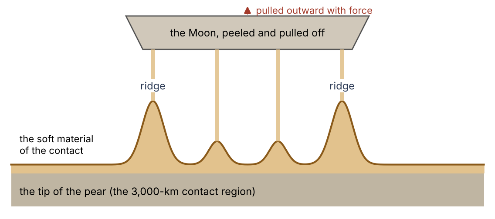
D.2それらの間隔
間隔の制約。列が先端の接触域で引き上げられたのなら、その間の幅はおよそ接触域の幅であるはずである。測定： 二つの列は 2,800–3,500 km 離れている（マジュロ–キリティマティ 3,490 km、タラワ–パルミラ 2,810 km、中央から中央まで 3,290 km）。先端と接触域の幅との一致：これらの値は先端の幅（3,360 km、C.1 で縞の二つの屈曲の間で測定）と接触域の幅（3,000 km、解放の際に月が載っていた面の幅、Paper 3）である。2,800–3,500 km のばらつきは異なる島の組の間で測ったことによるものであり、そのすべてが C.1 で求めた先端の幅の範囲 （3,040–3,700 km）の中にある。
非対称性と基部側へのずれ。二つの列は、屈曲から求めた先端の刻印（C.1）のまわりに対称には位置していない。西の列はその中心を通る（マーシャル諸島のクェゼリンは中心から 180 km にある）。東の列、ライン諸島はより東を通り、洋梨体の基部の中心にあるキリティマティを載せている。基部の幅の中への包含：このことは列を基部の外ではなく基部の中に置く。洋梨体の基部は幅 9,000–11,000 km であった（Paper 3）。したがって基部の中心の約 3,760 km 西に降りた 3,000 km の先端の領域全体（C.2）は基部の幅の中にあり、二つの列も同様である。 ずれの機構：列の組は接触域の幅をもち、屈曲の刻印からその幅の約半分だけ東にずれている。このずれは、畝が引き上げられた場所から直接生じる。屈曲の刻印は、解放の瞬間に月が載っていた 3,000 km の最終接触域を示す。一方、こての畝はより広い洋梨体の先端の中、その剥がれた部分――接触域が 6,000 km から 3,000 km へ縮小したときに剥がれた帯（D.1）――にあり、したがって一部は最終接触域を越えて基部側にある。このため列は、屈曲の刻印から基部の方へ、接触域の幅の約半分だけずれている。二つの独立な測定：こうして縞の屈曲と二つの列は、一つの幅、すなわち接触域の幅の、二つの独立な測定を与える。
D.3それらの年代
列に沿った火山性物質の年代は第二の検定を与える。それを読むには二つの用語の定義が必要である。
プルームの軌跡。プルームとは、地球の深部から海底下の固定された一点へ上昇する高温物質の柱である。海底がその点の上をゆっくり動くと、プルームは新しい場所で繰り返し海底を突き破って噴出し、火山の列を残す――ちょうど、その上をゆっくり引かれていく紙の下に固定して置かれたろうそくが、焦げ跡の列を残すようなものである。最も若い火山はプルームの真上に立ち、より古い火山はそれぞれプルームからより遠くへ運ばれている。
年代の進行。したがってプルームの軌跡は、その長さに沿って年代の一定の変化を示す。火山が活動的な端から遠いほど古く、秩序ある順序をなす。この一定の変化を年代の進行と呼ぶ。
こての畝に予想される年代の型。こての畝は一瞬で引き上げられたのではない。それらは月の剥離の間、その全期間――数百万年――にわたって引き上げられた（Paper 3）。したがってその年代は一瞬に集中するのではなく、剥離の期間全体に広がっているはずである。プルームの型の不在：またそれらは、プルームの軌跡の一定の進行に従うはずもない。この像の中には、動く海底の下の固定された源、列に沿って一歩ずつ古くなっていく火山を残すものは存在しない。このように引き上げられた列は、それぞれが大きな距離にわたって同時に見いだされるいくつかの別々のエピソード、あるいは列に沿った単純な順序のない長い年代の幅を示しうるが、一端から他端への整った順序は示さない。比較の基準： ここで比較するのは年代の値ではなく、列に沿ったその型である。公表された年代を下の表に示す。年代は Ma、すなわち現在から数えた百万年単位で与える（81 Ma は 8,100 万年前を意味する）。
| 列 | 年代 | 文献における読み |
|---|---|---|
| ライン諸島 | 二つのエピソード、81–86 Ma と 68–73 Ma、それぞれ 1,200 km から 4,000 km 超にわたって同時。年代の進行なし | 「単一または複数のホットスポットのモデルとは両立しない」。リソスフェアの伸張（デイビスほか 2002）。複数のマグマ源（ポッカルニーほか 2021） |
| マーシャル諸島 | 66–140 Ma。単純な進行なし。いくつかの海山には複数のエピソード | 短命で不連続な火山活動（コッパーズほか 2003） |
| ハワイ–天皇海山列 | 整った進行、0 から約 81 Ma | 動くプレートの下のプルーム |
表の読み方。中央の列は各列に沿った年代の型を定め、右の列は公表された研究そのものがその型をどう解釈しているかを示す。「同時」の定義：「同時」という語は同じ年代の構造を意味する。ライン諸島では、各火山エピソードが列の 1,200 km から 4,000 km 超にわたって一度に見いだされる。文献の機構：「ホットスポット」とはプルームの地表側の上端であり、「リソスフェアの伸張」とは地球の外側の剛体の殻の引き伸ばしと引っ張りである。
表は一行ずつ読むべきである。ライン列とマーシャル列は、列に沿った単純な年代の進行がないために、プルームの軌跡としてふるまわない。ライン諸島は二つのエピソードで、それぞれ数千 kmにわたって一度に噴出し、マーシャル諸島は列に沿った単純な順序なしに長い期間にわたって噴出した。 こての機構との一致：科学文献そのものが、ライン諸島の形成をプレートの伸張――すなわち下からの押しではなく、横への引っ張り――に帰している。これはこての像が提案するのと同じ種類の原因である。すなわち、下から上昇する源によってではなく、海底を横へ引き離すことによって形成された畝の列である。ハワイ–天皇海山列は確かに進行を示し、ハワイの 0 万年から天皇海山列の遠い端の約 8,100 万年に及ぶ。われわれは慎重に、これもこての一部であったと提案する。その年代は F.3 で論じる。
D.4今後行う比較
年代は一つの検定である。太平洋の列が下から押し上げられたのではなく上から引き上げられたことを示すため、それらは、科学文献が下から築かれたものとして読む太平洋の外の火山性海嶺と、対照をとって比較される。 参照海嶺：東経九十度海嶺（ケルゲレン。長さ 5,000 km の連続した一つの高まりで、年代は北の 7,700 万年から南の 4,300 万年）、ウォルビス海嶺（トリスタン–ゴフ）、チャゴス–ラカディブ海嶺（レユニオン）。 五つの比較尺度：年代、形態、撓曲の堀、地殻の根、方位（Part G）。この三つの海嶺が基準となる。太平洋の列が異なるしかたで築かれているなら、その違いは同じ五つの尺度に現れるはずである。
これらの尺度のうち二つは定義を要する。
撓曲の堀。大きな火山性海嶺は海底の上に立つ重い荷重である。地球の外側の殻はそのような荷重の下でたわむ。水に浮かぶ板が、おもりを置いた所で沈み込むのと同じである。海嶺のまわりで海底は押し下げられて窪みとなり、それはゆっくりと堆積物で満たされる。この窪みが撓曲の堀である。その深さと幅は、荷重がどれほど重いか、そして荷重が置かれたときに殻がどれほど硬かったかを明らかにする。ハワイのまわりの海底は測定された古典的な例である（ワッツ & テン・ブリンク 1989）。
地殻の根。多くの大きな海嶺の下では、地殻がまわりの海底より厚い。海嶺は下へ伸びる竜骨をもつ。氷山がその本体の大部分を水面下にもつのと同じである。海嶺の下のこの厚くなった地殻をその根と定義する。殻を通って上昇する融解物によって下から築かれた海嶺は、そのような根の上に載っていると予想される。
検定の現状。この比較は、太平洋の列が、下から築かれた海嶺に特徴的な撓曲の堀と根をもつのか、それとも表面から引き上げられた海嶺なら異なるであろうしかたでそれらと異なるのかを判定するためのものである。値は Study 7 で測定される。比較そのものはまだ行われていない。
現在われわれが手にしているもの。互いの距離が接触域の幅に等しい二つの畝の列。一つは先端の中心を通り、もう一つはキリティマティの近くを通る。どちらも基部の幅の中にあり、屈曲の刻印から基部の方へ幅の約半分ずれている――先端そのものの中、接触域が 6,000 km から 3,000 km へ縮小したときに剥がれた帯の中である。三つの列のうち二つはプルームの軌跡の年代の進行を示さない。そして、上から引き上げられた海嶺と下から築かれた海嶺を区別できる一組の尺度がある。
当時の赤道
Part A と Part B は、縞が一つの赤道の緯線であるという事実を用いた。この Part は、その赤道がどのように見いだされるか、今日の赤道に対してどれだけ傾いているか、そしてその傾きが何を意味するかを示す。縞は洋梨体が回収されたときの地球の赤道を記録しており、それは今日の赤道である必要はない。
E.1 縞は今日の赤道に対して傾いている
傾きの幾何学。測定したすべての縞は、南の縞も含めて、東へ進むにつれて系統的に北へ上がる。縞は今日の赤道と平行ではない。もし平行であれば、各縞はその全長にわたって一つの緯度を保つはずである。実際には、どの縞も西端より東端の方が北にある。
地球儀上での角度測定の方法論。角度は、著者が各縞に沿って記した点の間で、地球儀上で直接測定した。二点の縞では測定は単純である。上昇は東の点と西の点の緯度の差であり、水平距離は両者の間の東西距離――経度の差を緯度の余弦で縮めたもの。子午線は極へ向かって互いに近づくからである――であり、角度は水平距離に対する上昇の勾配である。たとえば、マレーの二点は緯度で 4.04°、経度で 20.95° 離れている。緯度約 31° ではこれは約 18 度の弧の水平距離であり、勾配は 12.7° である。二点より多くの点を記した縞（クラリオン、クリッパートン）では、角度はすべての点を通るように当てはめた直線のものである。
| 縞 | 記した点（東から西へ） | 角度 |
|---|---|---|
| メンドシノ | 39.84°N 129.66°W; 39.48°N 140.90°W | +2.4° |
| マレー | 33.12°N 134.36°W; 29.08°N 155.31°W | +12.7° |
| クラリオン | 19.44°N 110.26°W … 14.21°N 145.97°W（4 点） | +9.0° |
| クリッパートン | 10.16°N 112.86°W … 3.0°N 150°W（3 点） | +11.0° |
| 南の縞 | 10.23°S 132.24°W; 12.63°S 144.09°W | +11.7° |
角度：今日の緯線に対するもので、縞が東へ向かって上がるとき正。角度のセルの色はその大きさを示す。橙が濃いほど角度が大きい。五つの角度はすべて正であり、どの縞も東へ向かって上がっている。
表の読み方。角度の列を下へたどる。 共通の方向：五本の縞のうち四本――マレー、クラリオン、クリッパートン、南の縞――は 9.0° から 12.7° の範囲で傾いており、それらは基部の北にも南にもある。最も北の縞：最も短い区間で測定したメンドシノは、どれよりも傾きが小さい（2.4°）が、これも東へ向かって上がる。水平な縞はなく、東へ向かって下がる縞もない。縞は傾きの向きを共有し、その大部分は傾きの大きさも共有している。
E.2少なくとも 10° 傾いた一つの赤道
傾いた赤道の幾何学的分析。この種の傾いた線は、まさに傾いた赤道の緯線が今日の地図の上で見える姿である。今日の赤道に対して傾いた赤道は、それと正反対の二点で交わる。それに平行な線は、交点の一方の側では今日の緯度の上へ上がり、他方の側ではその下へ下がる。勾配の変化：交点の近くではそのような線はおよそ傾きの角度で上がる。交点から遠ざかるにつれて上昇はしだいに緩やかになり、地球を四分の一回った距離では、下へ向きを変える前にしばらく水平に進む。
下限の決定。まとめて当てはめると、縞は今日の赤道に対して少なくとも 10° 傾いた一つの赤道の緯線である。この閾値より下では当てはめが成り立たない。その理由は、系の赤道の近くにある縞の急さにある。傾いた赤道の近くの線は最大でもおよそ傾きの角度でしか上がらず、したがって 10° 未満しか傾いていない赤道は、クリッパートン（+11.0°）や南の縞（+11.7°）のような縞を生み出せない。
データの長さによる制約。この閾値より上では、約 20° までの傾きがほぼ同じくらいよく当てはまる。点が経度で約 55°――地球を回る道のりのおよそ七分の一――にしか広がっていないからである。短い弧での幾何学的類似：このように短い区間では、交点の近くで見た緩やかに傾いた赤道と、交点から遠くで見たより急に傾いた赤道とが、ほとんど同じ線を描く。両者を区別するには、縞をより長い弧にわたってたどる必要がある。このため、測定は下限を定めるが、その上の値は定めない。西の屈曲点の影響：正確な傾きは、縞が曲がる畝（B.6）を越えた最も西の点が、なおまっすぐな縞に属するかどうかに依存する。畝の西では縞は収束し、一つの赤道の緯線は収束しないので、これらの点を含めるか除くかで当てはめが変わる。
共通の赤道の上の基部。10°–14° の傾きでは、洋梨体の基部は系の赤道の上にある（11° の当てはめは、今日の赤道との交点を西経 159°、基部から経度で 1.5° の所に置き、基部を系の赤道から 1.6° の所に置く）。この所見は縞を洋梨体に結びつける。洋梨体はその時代の赤道から立ち上がり（B.2）、その基部は縞が定める赤道の上にある。正確な傾きは Study 1 として定める。Study 1 は完全な縞のトレースの上で赤道を当てはめ直し、その誤差を与える。
E.3 洋梨体が回収されたときの赤道
しわの形成の年代順。なぜ縞の赤道が今日の赤道と異なるのか。その違いは縞が形成された時期から生じる。縞は洋梨体が立っている間ではなく、解放の後、それが回収される間に海底に置かれた。それまでは、月質量の七倍から十二倍の質量が、地球の一方の側、赤道の近くで、表面のはるか上に立っていた。月が切り離され、洋梨体の内部の圧力が解放されると、洋梨体は地球の中へ回収されて吸収された――その重い部分は基部の下のマントルの底まで降りた（B.7）――。この吸収の出来事がしわを残した。先行側の縞と、背面のしわの寄った弧である（B.8）。
質量分布の変化。質量は地球を離れたのではない。それは外の高い所から内の深い所へ移り、自転軸のまわりの質量分布もそれとともに変わった。回転する物体は、その質量が軸のまわりにある一定のしかたで配置されているとき均衡している。この配置を測る量が慣性モーメントであり、それは質量の量とその軸からの距離とともに大きくなる。大きな質量を表面のはるか外から物体の深部へ移すと、その配置が変わり、それとともに均衡も変わる。球と粘土のたとえ：日常の像は、重い粘土の塊を一方の側の高い所に貼りつけた回転する球である。塊がその赤道の上にある限り、球は安定して回る。塊を球の深くへ押し込むと、その均衡は失われる。球は自転に対してゆっくりと転がり、やがて新しい均衡を見いだす。同じように、地球もそのとき新しい向きへ向きを変え始めえた。
軸の転回の記録。したがって縞は洋梨体が回収されたときの赤道を記録しており、おそらくはその転回の始まりも記録している。縞の赤道と今日の赤道の間の少なくとも 10° の傾きは、そのような転回が後に残すものである。本シリーズは軸の研究――地球がどれだけ、どれほどの速さで、どの線のまわりに向きを変えたか――には立ち入らない。この問題は今後の研究に残される。
課題
専門家の読者は、Part A–E の読みに対して三つの反論を提起するであろう。この Part はそれぞれの反論と、モデルが何と答え、何を要求するかを示す。第一は縞が載る海底の年代に、第二は縞と畝の順序に、第三はハワイ列の年代に関わる。
F.1海底の年代
地質年代学的な反論。縞の間の海底は、その磁気異常とその玄武岩によって、最大でも約 1 億 8,000 万年と年代づけられている――月の分離の時期よりはるかに若い。（磁気異常とは、一方または他方の向きに磁化された海底の帯であり、物質が冷えたときの地球の磁場を記録している。玄武岩は海底をつくる暗色の火山性物質であり、その放射性の時計によって年代づけられる。）この反論によれば、月が去ったときに形成された縞が、それよりずっと後に形成された海底の中にあることはありえない。
モデルにおける答え。モデルでは、海底は層を重ねてきたために若い年代を示す。新しい層が上に置かれる一方で、その下の層は引き戻され、下から更新される。表面の年代と構造の分離：実際に年代づけられているのは、いま縞の上に載っている物質――最後の層――であり、縞そのものではない。このように更新される海底は全体として年代づけることができず、その現在の表面の年代は縞の年代ではない。
雪と畝溝のたとえ。日常の像は、耕された畑に降る雪である。雪は昨夜降り、畝溝は数か月前に耕された。薄い雪の層の下でも、畝溝は長く淡い線として透けて見える。雪が古い起伏の上に載り、その形に沿うからである。雪の年代を測れば降雪の日付が得られるが、耕した日付は得られない。同じように、より古い褶曲の上に置かれた層は下の褶曲の形をとり、その層の年代を測ればその層そのものの年代が得られるが、その下の褶曲の年代は得られない。埋もれた残存物：縞そのものは数十億年の古さでありうる――その間に摩耗し部分的に消され、今日では新しい物質の下の残存物として見えている。
地図が示すもの。海底の地形では縞は弱く淡く現れる。一方、重力勾配では縞は鋭く際立つ（図 A.1、B.4、B.5）。二つの地図は異なるものを測っている。 地形は表面の形だけを描く。新しい層がより古い起伏を滑らかにし覆った所では、表面はそれを淡くしか示さない。 重力はある場所の下にあるすべての質量に依存し、重力勾配――重力が点から点へ変化する割合――は、表面と同じように深部の鋭い密度変化も捉える。地下の密度コントラスト： より軽く若い層の下にある、より高密度の物質の褶曲は、表面の形をほとんど変えない所でも、その上の重力を変える。重力は表面の下の密度コントラストを見るが、地形は表面だけに限られる。縞は、地図が新しい物質の下まで見通す所でより明瞭であり、その下に埋もれた残存物ならそう見えるはずである。海底の全球重力モデルは、文献そのものの中で「埋もれた構造地質学的構造」を明らかにするものと記述された（サンドウェルほか 2014）。
これが要求すること。縞は年代づけられた表面の下にある層の構造――すなわち、若い層がその上に広がったのであって、それをつくったのではない褶曲――でなければならない。検証の基準：縞が掘削や地震探査断面（音波を下へ送り、下の層から返ってくるこだまを記録して得る海底の断面）で横切られる所では、褶曲は最も若い層の下まで続いているはずである。層の厚さ：その上の層は、古い起伏の上に広がった層の構造として、頂部の上で薄く、窪みで厚いはずである。この要件は Study 9 で検定される。
F.2縞と畝の順序
反論。縞が畝の下を通るなら（B.5）、縞が畝より古いように、あるいは畝が縞より古いように見えるかもしれない。この観測は慎重に読まなければならない。縞が畝の下を通るという事実は、それだけでは出来事の順序を定めない。しわが下で形成される間、畝はすでに表面に立っていたかもしれない。側方と下から形成された褶曲（図 B.3）は、既存の畝の下を通りうる。ちょうど、敷物がその上に立つテーブルの下でしわになりうるのと同じである。
検定。検定の基準は、縞が畝の下を通る地点で畝が短縮されているかどうかである。褶曲が立っている畝の下で形成されたのなら、畝の下の地盤は内側へ引き寄せられ、その上の畝はそれを示すはずである――褶曲が通る所で短縮され、押し詰められ、あるいは曲げられているはずである。褶曲が必ずその下を通ったはずの所で畝がまったく損なわれていなければ、畝は後から築かれたのである。この問題は Study 6 の主題であり、鉛直方向の誇張のない平らな地図の上で測定される。
F.3ハワイの年代の進行
反論。ハワイ–天皇海山列は、プルームの軌跡に合致する整った年代の進行をもち（D.3）、ハワイの 0 万年から天皇海山列の遠い端の約 8,100 万年に及ぶ。そしてこての畝はそのような秩序ある進行を示さないはずである。
答え。本論文の読みはハワイ–天皇海山列に依存せず、本論文はそれにいかなる要件も課さない。そこで何が起きたかはまだわかっていない。われわれは慎重に、これもこての一部であったと提案する。 読みの柱：読みはライン列とマーシャル列に依存しており、それらの年代はプルームの進行を示さない（D.3）。ハワイ–天皇海山列は、Study 7 の枠組みの中で、それらと並べて、また下から築かれた海嶺と並べて置かれる。
予測、検定、今後行う研究
この Part は本論文の検定を一つの表にまとめる。各行はまだ実施されていない研究である――Study 10 は最初の実行を終えており（C.5）、その行は次の段階を示す。中央の列は何を測定すべきかを述べ、右の列はどの結果が縞を洋梨体の先行側として読むことを支持するかを述べる。研究は本論文の順序に従う。赤道（Part E）、基部のまわりの縞の配置（Part B）、畝（Part B と Part D）、鏡像の刻印（Part C）、海底の年代（Part F）、太平洋全体の縞（Part C）である。
| # | 研究 | 読みを支持する結果 |
|---|---|---|
| 1 | 縞の赤道を、完全な縞についてのわれわれ自身のトレースの上で当てはめ直す：傾き、交点、誤差 | 基部を通る一つの共通の赤道 |
| 2 | 偶然の検定：無作為な点が系の赤道から 2° 以内に入る頻度 | これほど赤道に近い位置は無作為な点にとってまれである |
| 3 | 一方の側のみ：縞は基部で始まり東へ続くか。その西に何があるか | 基部で始まり東へ続く縞。その西での屈曲、収束、しわ |
| 4 | 各縞を横切る深さと年代の段差：それは基部へ向かって大きくなるか、基部から離れて大きくなるか | 基部のまわりに秩序づけられた段差 |
| 5 | 後行側：基部のまわりの太平洋の東西の非対称性 | 東に平行な縞、西にしわの寄った弧 |
| 6 | 畝の下の連続性：各縞は両側で同じ円の上に続くか。その上の畝は短縮されているか（平らな地図、誇張なし、カーソルからの座標） | 各縞が畝の両側で同じ円の上にある。畝はその上で短縮されている |
| 7 | こての畝と、太平洋の外で下から築かれた海嶺（東経九十度海嶺、ウォルビス海嶺、チャゴス–ラカディブ海嶺）との比較：年代、形態、撓曲の堀、根、方位 | プルームの軌跡とは異なるしかたで築かれたこての畝 |
| 8 | 鏡像の刻印：晴れの海、神酒の海、接触域の中心、および表側のその他の海の鏡像の位置にある地形を、縮尺 1.37 で記す | 予測された位置にある円形の地形 |
| 9 | 年代づけられた層の下の縞：縞を横切る地震探査断面と掘削――褶曲は最も若い層の下まで続くか、層はその頂部の上で薄いか | 褶曲が最も若い層の下まで続き、層がその頂部の上で薄い |
| 10 | 先端へ向かう太平洋全体の縞（C.5 で最初の実行）：北、中央、南の縞の完全なデジタル化と、偶然のモデルに対する正式な検定 | 縞の経路が、同じ方向の無作為な線よりも、また先端へ向けて描かれなかった線よりも頻繁に最終接触域に達する |
各研究が示すもの。
Study 1（縞の赤道の較正）は、現段階では少なくとも 10° で約 20° までとしかわかっていない縞の赤道の傾き（E.2）と、それが今日の赤道と交わる位置を、それらの誤差とともに定める。それは、縞が本当に一つの共通の赤道をもつかどうか、そして当てはめた傾きで洋梨体の基部がその上にあるかどうかを示す。
Study 2（基部の位置についての偶然の検定）は、赤道の上にある基部の位置に意味があるのか、それとも偶然の産物なのかを示す。どの点にも、与えられた線の近くにある何らかの確率がある。この研究は、領域内に無作為に置かれた点が系の赤道から 2° 以内に入る頻度を測定する。それがまれであれば、1.6° の距離にある基部の位置は意味のある一致であり、ありふれていれば意味はない。
Study 3（一方の側のみ）は、縞が基部の一方の側に属することを示す。すなわち、縞が基部の領域で始まり、先行側である東へ広がっていること、そしてその西にある構造が同じ縞の続きではなく、B.6 の屈曲と収束および B.8 のしわの寄った背面であることを示す。
Study 4（基部のまわりの段差の順序）は、各縞を横切って海底が段差状に――深さと年代において――変化するかどうか、そしてそれらの段差が基部のまわりに秩序づけられ、基部へ向かって、あるいは基部から離れて大きくなるかどうかを示す。基部のまわりの秩序は、一本一本の縞を洋梨体に結びつけるであろう。
Study 5（大洋の非対称性）は、太平洋が基部の東と西で異なるかどうか――先行側の平行な縞と後行側のしわの寄った弧――を示す（B.3、B.8）。
Study 6（縞と畝の順序）は、鉛直方向の誇張のない平らな地図の上で、カーソルから直接読み取った位置を用いて、各縞が畝の両側で同じ円の上に続くかどうか、そしてその上の畝が短縮されているかどうかを示す。それは B.5–B.6 の最初の読みを測定に変え、縞と畝の間の順序を与える （F.2）。
Study 7（こての畝とプルームの軌跡の比較）は、こての畝が、文献が下から築かれたものとして読む海嶺とは異なるしかたで築かれているかどうかを示す。D.4 の五つの尺度――年代、形態、撓曲の堀、根、方位――を並べて置く。また、ハワイ–天皇海山列がこての畝に属するかどうかを見るため、それも並べて置く （F.3）。
Study 8（海底の鏡像の刻印）は、C.3 の鏡像の刻印が海底の上にあるかどうかを示す。すなわち、晴れの海、神酒の海、接触域の中心、および表側のその他の海について鏡像が予測する位置に、縮尺 1.37――月が先端の上に載っていたときの月面の拡大率――で、円形の地形が存在するかどうかである。
Study 9（層の下の褶曲）は、縞が年代づけられた表面の下にあるより古い褶曲であるかどうか（F.1）を示す。すなわち、地震探査断面と掘削で褶曲が最も若い層の下まで続くかどうか、そしてその上の層が頂部の上で薄く窪みで厚いかどうかである。
Study 10（太平洋の縞のデジタル化と偶然の検定）は、C.5 の最初の実行を完全な測定に変える。太平洋のすべての縞をその全経路にわたってデジタル化し、最終接触域に達する経路の割合を、同じ場所から同じ方向に始めた無作為な線と比較する。それは、北、中央、南の先端への収束が、太平洋上の西向きの線が偶然に与えるものを上回るかどうかを示す。
結論
下の表は本論文をまとめる。各行は一つの観測であり、最初の列の色は信号機である。その読み方：緑は、その観測が測定され、本論文の読みに適合することを意味する。橙は、それが最初の読み、またはまだ行われていない比較に依存し、Part G の研究で検定されることを意味する。右の列は各観測の値または状態と、それが示される節を与える。
| 信号機 | 観測 | 状態 |
|---|---|---|
| 縞の系の赤道の上にある基部 | そこから 1.6°、クリッパートンの縞（1.8°）の近く、傾き 10°–14° のとき（E.2） | |
| 先端の領域の幅 | 測定値：3,360 km、3,000 km の接触域と幅 3,650 km のドームに対して | |
| 縞の系の長さ | 測定値：先端から東端まで 9,360 km、先端の領域を含めた洋梨体の本体そのものの長さ 8,890–9,000 km に対して（C.4） | |
| 地球の上の表側 | 縮尺 1.37 の鏡像の刻印で、雨の海はその位置にある。晴れの海と接触域の中心は先端の領域の中に入る | |
| 畝の下の縞 | 途切れのない連続性、四つの交差地点で観測 | |
| 太平洋全体の縞が先端へ導く | GEBCO 2026 上でトレース：北、中央、南の十本の経路すべてが先端の領域に達する。そのうち六本が最終接触域の中心から 1,500 km 以内を通る（166–1,274 km）。三本の参照線はいずれもこの範囲に入らない（C.5） | |
| 後行側（洋梨体の背面） | 先端の西のしわの寄った弧、基部から 8,100–10,300 km（洋梨体の本体 8,890–9,000） | |
| 畝の西での収束 | 斜めからの眺めにもとづく最初の読み | |
| こての畝 | 先端そのものの中、接触域が 6,000 km から 3,000 km へ縮小したときに剥がれた帯の中（D.2）。ライン列とマーシャル列はプルームの年代の進行を示さない。そのような進行を示すハワイ–天皇海山列は、現段階ではこての一部として提案されている。比較はまだ行われていない | |
| 海底の年代 | 年代づけられた表面は最後の層にすぎない。縞はその下にあるより古い褶曲である（F.1）――地震探査断面で検定される |
表の読み方。各行は一つの観測であり、最初の列の色は信号機である。六つの緑の行は本論文の幾何学である。洋梨体の基部は縞の赤道の上にあり、先端は接触域に一致する幅をもち、縞は洋梨体の本体そのものの長さをもち、月の表側は鏡像として先端の中に入り、縞は途切れることなく畝の下を通り、そして太平洋全体の縞――北、中央、南――は先端へと導く。四つの橙の行は、Part G の研究の手順を待つ観測である。洋梨体の背面、畝の西での縞の収束、畝の列の性質、そして年代づけられた海底の下の縞である。
縞の系と月が形成された場所。北太平洋の縞は洋梨体の基部のまわりに配置されている。基部はその赤道の上にあり、縞はその東へ続き、その西では、月が載っていた接触域の幅をもつ領域へ向かって曲がり、収束する。データの中でトレースすると、太平洋の中央と南の縞も同じ領域へと導く。この収束の領域の中には、まだ収縮していない月の縮尺での表側の鏡像の刻印がある。畝の列は互いに接触域の幅だけ離れており、先端そのものの中、接触域が縮小したときに剥がれた帯の中にある――一部は最終接触域を越えて基部側にある。われわれは縞を、洋梨体が回収されたときに折り畳まれたその先行側として読み、屈曲の領域を月が形成された場所として読む。
一つの像で。地球そのものの物質からなる洋梨体が太平洋の上に立っていた。その基部はキリティマティの近くにあり、その先端はそこから約 3,760 km 西にあって地球の自転に遅れ、月はその先端の上にあった。洋梨体の前面、すなわち自転の方向を向いた先行側の壁は引き伸ばされた。月が切り離され圧力が解放されると、洋梨体は地球の中へ回収された。前面の壁は海底に沿って東へ、アメリカへ向かって、自転の方向に塗り広げられ、縞として置かれた――その長さは 9,360 km であり、洋梨体の本体の 8,890–9,000 km に対応する。洋梨体の背面は西太平洋の島弧へとしわになった。月は接触域が 6,000 km から 3,000 km へ縮小するにつれてそこから剥がされ、力によって引き離された。剥離の間に月は接触域の柔らかい物質を引き上げ、先端そのものの中、剥がれた帯の中に、互いに 2,800–3,500 km 離れた畝の列を立ち上げた。それらは洋梨体が回収されたときに先端とともに海底へ降りた。そして月の表面は、その鏡像を縮尺 1.37 で海底に刻印した。縞は当時の赤道を記録しており、それは今日の赤道に対して少なくとも 10° 傾いている。Part G の研究の手順がこれを検定する。
参考文献
Cottaar, S. & Lekic, V. (2016). Morphology of seismically slow lower-mantle structures. Geophys. J. Int. 207, 1122–1136.
Davis, A.S., Gray, L.B., Clague, D.A. & Hein, J.R. (2002). The Line Islands revisited: new Ar/Ar geochronologic evidence for episodes of volcanism due to lithospheric extension. Geochem. Geophys. Geosyst. 3.
GEBCO Compilation Group (2026). GEBCO 2026 Grid. General Bathymetric Chart of the Oceans (IHO–IOC).
Koppers, A.A.P., Staudigel, H., Pringle, M.S. & Wijbrans, J.R. (2003). Short-lived and discontinuous intraplate volcanism in the South Pacific: hot spots or extensional volcanism? Geochem. Geophys. Geosyst. 4.
Pockalny, R., Barth, G., Eakins, B., Kelley, K.A. & Wertman, C. (2021). Multiple melt source origin of the Line Islands (Pacific Ocean). Geology 49, 1358–1362.
Sandwell, D.T., Müller, R.D., Smith, W.H.F., Garcia, E. & Francis, R. (2014). New global marine gravity model from CryoSat-2 and Jason-1 reveals buried tectonic structure. Science 346, 65–67.
Watts, A.B. & ten Brink, U.S. (1989). Crustal structure, flexure, and subsidence history of the Hawaiian Islands. J. Geophys. Res. 94, 10473–10500.
Duran, Z. Papers 3 and 8 of this series (2026).
AIツールの使用：著者はAIアシスタント（Claude, Anthropic; ChatGPT, OpenAI; Googleの AI ベースの検索アシスタント）を、計算スクリプトの作成と実行、カタログと地図の解析、図表の作成、シナリオの議論、そして言語の校正と翻訳に用いた。モデルとその結論は著者のものである。著者は内容を確認し、それに対して全責任を負う。